| ComCat M7.1 (ci38457511), 122 Days After, ShakeMap Surfaces | |
|---|---|
| Num Simulations | 100000 |
| Start Time | 2019/11/05 03:05:42 UTC |
| Start Time Epoch Milliseconds | 1572923142971 |
| Duration | 10 Years |
| Includes Spontaneous? | false |
| Trigger Ruptures | 2373 Trigger Ruptures |
| First: M3.98 at 2019/07/04 17:02:55 UTC | |
| Last: M2.52 at 2019/11/05 02:13:21 UTC | |
| Largest: M7.1 at 2019/07/06 03:19:53 UTC | |
| Trigger Ruptures | (none) |
| Config Generated With | u3etas_comcat_event_config_builder.sh --event-id ci38457511 --num-simulations 100000 --days-before 7 --end-now --mag-complete 3.5 --finite-surf-shakemap --finite-surf-shakemap-min-mag 5 --hpc-site USC_HPC --nodes 36 --hours 24 --queue scec |
| Magnitude | 1 Hour Prob | 1 Day Prob | 1 Week Prob | 1 Month Prob | 1 Year Prob | 10 Year Prob |
|---|---|---|---|---|---|---|
| M≥4 | 2.71E-3 (0.27%) | 0.061 (6.08%) | 0.349 (34.94%) | 0.818 (81.80%) | 1.000 (100.00%) | 1.000 (100.00%) |
| M≥4.5 | 7.70E-4 (0.08%) | 0.019 (1.95%) | 0.130 (12.98%) | 0.427 (42.73%) | 0.970 (97.05%) | 1.000 (99.98%) |
| M≥5 | 3.10E-4 (0.03%) | 6.53E-3 (0.65%) | 0.044 (4.43%) | 0.166 (16.58%) | 0.688 (68.83%) | 0.941 (94.08%) |
| M≥5.5 | 5.00E-5 (0.01%) | 1.78E-3 (0.18%) | 0.013 (1.31%) | 0.055 (5.46%) | 0.311 (31.10%) | 0.604 (60.44%) |
| M≥6 | 0.000 (0.00%) | 4.70E-4 (0.05%) | 3.66E-3 (0.37%) | 0.016 (1.58%) | 0.101 (10.10%) | 0.237 (23.72%) |
| M≥6.5 | 0.000 (0.00%) | 8.00E-5 (0.01%) | 8.30E-4 (0.08%) | 3.60E-3 (0.36%) | 0.024 (2.41%) | 0.060 (5.99%) |
| M≥7 | 0.000 (0.00%) | 2.00E-5 (0.00%) | 2.50E-4 (0.03%) | 1.20E-3 (0.12%) | 8.15E-3 (0.81%) | 0.021 (2.11%) |
| M≥7.1 | 0.000 (0.00%) | 1.00E-5 (0.00%) | 2.00E-4 (0.02%) | 1.01E-3 (0.10%) | 6.97E-3 (0.70%) | 0.018 (1.80%) |
| M≥7.5 | 0.000 (0.00%) | 0.000 (0.00%) | 5.00E-5 (0.01%) | 3.50E-4 (0.03%) | 2.47E-3 (0.25%) | 6.41E-3 (0.64%) |
| M≥8 | 0.000 (0.00%) | 0.000 (0.00%) | 0.000 (0.00%) | 1.00E-5 (0.00%) | 5.00E-5 (0.01%) | 1.30E-4 (0.01%) |
Legend
| Mag | Mean | 2.5 %ile | 97.5 %ile | Median | Mode | 10 yr Probability | 10 yr Supra-Seis Prob | Primary Aftershocks Mean |
|---|---|---|---|---|---|---|---|---|
| M≥2.5 | 1460.237 | 875.000 | 4139.000 | 1136.000 | 1019.000 | 1.000 (100.00%) | 0.095 (9.46%) | 647.990 |
| M≥2.6 | 1159.870 | 691.000 | 3285.000 | 903.000 | 779.000 | 1.000 (100.00%) | 0.095 (9.46%) | 514.715 |
| M≥2.7 | 921.268 | 545.000 | 2617.000 | 718.000 | 637.000 | 1.000 (100.00%) | 0.095 (9.46%) | 408.843 |
| M≥2.8 | 731.769 | 430.000 | 2079.000 | 570.000 | 515.000 | 1.000 (100.00%) | 0.095 (9.46%) | 324.718 |
| M≥2.9 | 581.177 | 339.000 | 1652.000 | 454.000 | 401.000 | 1.000 (100.00%) | 0.095 (9.46%) | 257.922 |
| M≥3 | 461.615 | 266.000 | 1313.000 | 361.000 | 323.000 | 1.000 (100.00%) | 0.095 (9.46%) | 204.888 |
| M≥3.1 | 366.600 | 208.000 | 1046.000 | 287.000 | 263.000 | 1.000 (100.00%) | 0.095 (9.46%) | 162.722 |
| M≥3.2 | 291.184 | 163.000 | 829.000 | 228.000 | 205.000 | 1.000 (100.00%) | 0.095 (9.46%) | 129.242 |
| M≥3.3 | 231.282 | 127.000 | 661.000 | 181.000 | 165.000 | 1.000 (100.00%) | 0.095 (9.46%) | 102.656 |
| M≥3.4 | 183.675 | 99.000 | 525.000 | 144.000 | 128.000 | 1.000 (100.00%) | 0.095 (9.46%) | 81.513 |
| M≥3.5 | 145.895 | 76.000 | 417.000 | 115.000 | 106.000 | 1.000 (100.00%) | 0.095 (9.46%) | 64.742 |
| M≥3.6 | 115.853 | 59.000 | 332.000 | 91.000 | 85.000 | 1.000 (100.00%) | 0.095 (9.46%) | 51.408 |
| M≥3.7 | 92.012 | 45.000 | 263.000 | 73.000 | 68.000 | 1.000 (100.00%) | 0.095 (9.46%) | 40.828 |
| M≥3.8 | 73.077 | 35.000 | 211.000 | 58.000 | 53.000 | 1.000 (100.00%) | 0.095 (9.46%) | 32.424 |
| M≥3.9 | 58.037 | 26.000 | 167.000 | 46.000 | 39.000 | 1.000 (100.00%) | 0.095 (9.46%) | 25.754 |
| M≥4 | 46.064 | 20.000 | 134.000 | 37.000 | 32.000 | 1.000 (100.00%) | 0.095 (9.46%) | 20.435 |
| M≥4.1 | 36.556 | 15.000 | 107.000 | 29.000 | 26.000 | 1.000 (100.00%) | 0.095 (9.46%) | 16.222 |
| M≥4.2 | 29.017 | 11.000 | 85.000 | 23.000 | 20.000 | 1.000 (100.00%) | 0.095 (9.46%) | 12.875 |
| M≥4.3 | 23.030 | 8.000 | 68.000 | 18.000 | 16.000 | 1.000 (100.00%) | 0.095 (9.46%) | 10.215 |
| M≥4.4 | 18.279 | 6.000 | 55.000 | 14.000 | 12.000 | 1.000 (100.00%) | 0.095 (9.46%) | 8.108 |
| M≥4.5 | 14.482 | 4.000 | 45.000 | 11.000 | 10.000 | 1.000 (99.98%) | 0.095 (9.46%) | 6.422 |
| M≥4.6 | 11.476 | 3.000 | 36.000 | 9.000 | 7.000 | 0.999 (99.88%) | 0.095 (9.46%) | 5.091 |
| M≥4.7 | 9.094 | 2.000 | 29.000 | 7.000 | 5.000 | 0.996 (99.56%) | 0.095 (9.46%) | 4.036 |
| M≥4.8 | 7.197 | 1.000 | 23.000 | 6.000 | 4.000 | 0.988 (98.76%) | 0.095 (9.46%) | 3.195 |
| M≥4.9 | 5.686 | 0.000 | 19.000 | 4.000 | 3.000 | 0.970 (97.01%) | 0.095 (9.46%) | 2.526 |
| M≥5 | 4.493 | 0.000 | 15.000 | 3.000 | 2.000 | 0.941 (94.08%) | 0.095 (9.46%) | 1.995 |
| M≥5.1 | 3.543 | 0.000 | 13.000 | 3.000 | 2.000 | 0.897 (89.72%) | 0.095 (9.46%) | 1.575 |
| M≥5.2 | 2.792 | 0.000 | 10.000 | 2.000 | 1.000 | 0.839 (83.94%) | 0.095 (9.46%) | 1.242 |
| M≥5.3 | 2.193 | 0.000 | 9.000 | 1.000 | 1.000 | 0.769 (76.88%) | 0.095 (9.46%) | 0.977 |
| M≥5.4 | 1.717 | 0.000 | 7.000 | 1.000 | 0.000 | 0.689 (68.87%) | 0.095 (9.46%) | 0.765 |
| M≥5.5 | 1.338 | 0.000 | 6.000 | 1.000 | 0.000 | 0.604 (60.44%) | 0.095 (9.46%) | 0.595 |
| M≥5.6 | 1.037 | 0.000 | 5.000 | 1.000 | 0.000 | 0.520 (52.03%) | 0.095 (9.46%) | 0.462 |
| M≥5.7 | 0.797 | 0.000 | 4.000 | 0.000 | 0.000 | 0.439 (43.85%) | 0.095 (9.46%) | 0.356 |
| M≥5.8 | 0.606 | 0.000 | 4.000 | 0.000 | 0.000 | 0.363 (36.29%) | 0.095 (9.46%) | 0.272 |
| M≥5.9 | 0.456 | 0.000 | 3.000 | 0.000 | 0.000 | 0.294 (29.40%) | 0.095 (9.46%) | 0.204 |
| M≥6 | 0.350 | 0.000 | 2.000 | 0.000 | 0.000 | 0.237 (23.72%) | 0.095 (9.45%) | 0.155 |
| M≥6.1 | 0.256 | 0.000 | 2.000 | 0.000 | 0.000 | 0.184 (18.38%) | 0.081 (8.13%) | 0.115 |
| M≥6.2 | 0.169 | 0.000 | 2.000 | 0.000 | 0.000 | 0.130 (12.96%) | 0.064 (6.38%) | 0.078 |
| M≥6.3 | 0.125 | 0.000 | 1.000 | 0.000 | 0.000 | 0.099 (9.93%) | 0.053 (5.28%) | 0.058 |
| M≥6.4 | 0.096 | 0.000 | 1.000 | 0.000 | 0.000 | 0.077 (7.65%) | 0.046 (4.57%) | 0.043 |
| M≥6.5 | 0.073 | 0.000 | 1.000 | 0.000 | 0.000 | 0.060 (5.99%) | 0.039 (3.91%) | 0.033 |
| M≥6.6 | 0.058 | 0.000 | 1.000 | 0.000 | 0.000 | 0.050 (5.03%) | 0.036 (3.56%) | 0.028 |
| M≥6.7 | 0.047 | 0.000 | 1.000 | 0.000 | 0.000 | 0.041 (4.11%) | 0.031 (3.08%) | 0.022 |
| M≥6.8 | 0.037 | 0.000 | 1.000 | 0.000 | 0.000 | 0.034 (3.37%) | 0.027 (2.68%) | 0.018 |
| M≥6.9 | 0.029 | 0.000 | 1.000 | 0.000 | 0.000 | 0.027 (2.71%) | 0.023 (2.25%) | 0.015 |
| M≥7 | 0.022 | 0.000 | 0.000 | 0.000 | 0.000 | 0.021 (2.11%) | 0.018 (1.84%) | 0.011 |
| M≥7.1 | 0.019 | 0.000 | 0.000 | 0.000 | 0.000 | 0.018 (1.80%) | 0.016 (1.64%) | 9.58E-3 |
| M≥7.2 | 0.014 | 0.000 | 0.000 | 0.000 | 0.000 | 0.014 (1.37%) | 0.013 (1.28%) | 7.19E-3 |
| M≥7.3 | 9.88E-3 | 0.000 | 0.000 | 0.000 | 0.000 | 9.65E-3 (0.97%) | 9.20E-3 (0.92%) | 5.00E-3 |
| M≥7.4 | 8.52E-3 | 0.000 | 0.000 | 0.000 | 0.000 | 8.37E-3 (0.84%) | 8.17E-3 (0.82%) | 4.35E-3 |
| M≥7.5 | 6.51E-3 | 0.000 | 0.000 | 0.000 | 0.000 | 6.41E-3 (0.64%) | 6.35E-3 (0.64%) | 3.36E-3 |
| M≥7.6 | 3.44E-3 | 0.000 | 0.000 | 0.000 | 0.000 | 3.36E-3 (0.34%) | 3.34E-3 (0.33%) | 1.75E-3 |
| M≥7.7 | 1.20E-3 | 0.000 | 0.000 | 0.000 | 0.000 | 1.17E-3 (0.12%) | 1.17E-3 (0.12%) | 6.80E-4 |
| M≥7.8 | 7.30E-4 | 0.000 | 0.000 | 0.000 | 0.000 | 7.30E-4 (0.07%) | 7.30E-4 (0.07%) | 4.00E-4 |
| M≥7.9 | 4.40E-4 | 0.000 | 0.000 | 0.000 | 0.000 | 4.40E-4 (0.04%) | 4.40E-4 (0.04%) | 2.80E-4 |
| M≥8 | 1.30E-4 | 0.000 | 0.000 | 0.000 | 0.000 | 1.30E-4 (0.01%) | 1.30E-4 (0.01%) | 5.00E-5 |
| M≥8.1 | 2.00E-5 | 0.000 | 0.000 | 0.000 | 0.000 | 2.00E-5 (0.00%) | 2.00E-5 (0.00%) | 0.000 |
| M≥8.2 | 0.000 | 0.000 | 0.000 | 0.000 | 0.000 | 0.000 (0.00%) | 0.000 (0.00%) | 0.000 |
| M≥8.3 | 0.000 | 0.000 | 0.000 | 0.000 | 0.000 | 0.000 (0.00%) | 0.000 (0.00%) | 0.000 |
| M≥8.4 | 0.000 | 0.000 | 0.000 | 0.000 | 0.000 | 0.000 (0.00%) | 0.000 (0.00%) | 0.000 |
| M≥8.5 | 0.000 | 0.000 | 0.000 | 0.000 | 0.000 | 0.000 (0.00%) | 0.000 (0.00%) | 0.000 |
| M≥8.6 | 0.000 | 0.000 | 0.000 | 0.000 | 0.000 | 0.000 (0.00%) | 0.000 (0.00%) | 0.000 |
| M≥8.7 | 0.000 | 0.000 | 0.000 | 0.000 | 0.000 | 0.000 (0.00%) | 0.000 (0.00%) | 0.000 |
| M≥8.8 | 0.000 | 0.000 | 0.000 | 0.000 | 0.000 | 0.000 (0.00%) | 0.000 (0.00%) | 0.000 |
| M≥8.9 | 0.000 | 0.000 | 0.000 | 0.000 | 0.000 | 0.000 (0.00%) | 0.000 (0.00%) | 0.000 |
| M≥9 | 0.000 | 0.000 | 0.000 | 0.000 | 0.000 | 0.000 (0.00%) | 0.000 (0.00%) | 0.000 |
Legend

| Mag | Mean | 2.5 %ile | 97.5 %ile | Median | Mode | 1 yr Probability | 1 yr Supra-Seis Prob | Primary Aftershocks Mean |
|---|---|---|---|---|---|---|---|---|
| M≥2.5 | 543.893 | 332.000 | 1283.000 | 426.000 | 386.000 | 1.000 (100.00%) | 0.038 (3.79%) | 281.671 |
| M≥2.6 | 431.996 | 260.000 | 1021.000 | 339.000 | 314.000 | 1.000 (100.00%) | 0.038 (3.79%) | 223.734 |
| M≥2.7 | 343.107 | 204.000 | 812.000 | 270.000 | 246.000 | 1.000 (100.00%) | 0.038 (3.79%) | 177.705 |
| M≥2.8 | 272.557 | 159.000 | 645.000 | 215.000 | 197.000 | 1.000 (100.00%) | 0.038 (3.79%) | 141.156 |
| M≥2.9 | 216.451 | 124.000 | 513.000 | 171.000 | 154.000 | 1.000 (100.00%) | 0.038 (3.79%) | 112.109 |
| M≥3 | 171.955 | 97.000 | 407.000 | 136.000 | 124.000 | 1.000 (100.00%) | 0.038 (3.79%) | 89.077 |
| M≥3.1 | 136.570 | 75.000 | 324.000 | 108.000 | 101.000 | 1.000 (100.00%) | 0.038 (3.79%) | 70.759 |
| M≥3.2 | 108.491 | 58.000 | 258.000 | 86.000 | 78.000 | 1.000 (100.00%) | 0.038 (3.79%) | 56.208 |
| M≥3.3 | 86.178 | 44.000 | 206.000 | 69.000 | 61.000 | 1.000 (100.00%) | 0.038 (3.79%) | 44.649 |
| M≥3.4 | 68.445 | 34.000 | 164.000 | 54.000 | 50.000 | 1.000 (100.00%) | 0.038 (3.79%) | 35.464 |
| M≥3.5 | 54.376 | 26.000 | 131.000 | 43.000 | 39.000 | 1.000 (100.00%) | 0.038 (3.79%) | 28.168 |
| M≥3.6 | 43.180 | 19.000 | 105.000 | 34.000 | 30.000 | 1.000 (100.00%) | 0.038 (3.79%) | 22.371 |
| M≥3.7 | 34.285 | 14.000 | 84.000 | 27.000 | 24.000 | 1.000 (100.00%) | 0.038 (3.79%) | 17.760 |
| M≥3.8 | 27.219 | 11.000 | 67.000 | 22.000 | 20.000 | 1.000 (100.00%) | 0.038 (3.79%) | 14.103 |
| M≥3.9 | 21.628 | 8.000 | 54.000 | 17.000 | 15.000 | 1.000 (100.00%) | 0.038 (3.79%) | 11.202 |
| M≥4 | 17.165 | 5.000 | 44.000 | 14.000 | 12.000 | 1.000 (100.00%) | 0.038 (3.79%) | 8.886 |
| M≥4.1 | 13.616 | 4.000 | 35.000 | 11.000 | 9.000 | 1.000 (99.99%) | 0.038 (3.79%) | 7.049 |
| M≥4.2 | 10.815 | 2.000 | 29.000 | 9.000 | 7.000 | 0.999 (99.89%) | 0.038 (3.79%) | 5.600 |
| M≥4.3 | 8.577 | 2.000 | 23.000 | 7.000 | 5.000 | 0.995 (99.55%) | 0.038 (3.79%) | 4.440 |
| M≥4.4 | 6.811 | 1.000 | 19.000 | 5.000 | 4.000 | 0.987 (98.75%) | 0.038 (3.79%) | 3.523 |
| M≥4.5 | 5.397 | 0.000 | 16.000 | 4.000 | 3.000 | 0.970 (97.05%) | 0.038 (3.79%) | 2.791 |
| M≥4.6 | 4.276 | 0.000 | 13.000 | 3.000 | 2.000 | 0.941 (94.05%) | 0.038 (3.79%) | 2.211 |
| M≥4.7 | 3.388 | 0.000 | 11.000 | 2.000 | 2.000 | 0.896 (89.63%) | 0.038 (3.79%) | 1.753 |
| M≥4.8 | 2.679 | 0.000 | 9.000 | 2.000 | 1.000 | 0.838 (83.77%) | 0.038 (3.79%) | 1.385 |
| M≥4.9 | 2.116 | 0.000 | 8.000 | 1.000 | 1.000 | 0.766 (76.64%) | 0.038 (3.79%) | 1.094 |
| M≥5 | 1.673 | 0.000 | 7.000 | 1.000 | 0.000 | 0.688 (68.83%) | 0.038 (3.79%) | 0.864 |
| M≥5.1 | 1.319 | 0.000 | 6.000 | 1.000 | 0.000 | 0.607 (60.74%) | 0.038 (3.79%) | 0.682 |
| M≥5.2 | 1.038 | 0.000 | 5.000 | 1.000 | 0.000 | 0.525 (52.53%) | 0.038 (3.79%) | 0.537 |
| M≥5.3 | 0.815 | 0.000 | 4.000 | 0.000 | 0.000 | 0.449 (44.86%) | 0.038 (3.79%) | 0.421 |
| M≥5.4 | 0.639 | 0.000 | 3.000 | 0.000 | 0.000 | 0.376 (37.62%) | 0.038 (3.79%) | 0.330 |
| M≥5.5 | 0.497 | 0.000 | 3.000 | 0.000 | 0.000 | 0.311 (31.10%) | 0.038 (3.79%) | 0.257 |
| M≥5.6 | 0.386 | 0.000 | 3.000 | 0.000 | 0.000 | 0.255 (25.50%) | 0.038 (3.79%) | 0.200 |
| M≥5.7 | 0.296 | 0.000 | 2.000 | 0.000 | 0.000 | 0.206 (20.58%) | 0.038 (3.79%) | 0.154 |
| M≥5.8 | 0.226 | 0.000 | 2.000 | 0.000 | 0.000 | 0.164 (16.38%) | 0.038 (3.79%) | 0.117 |
| M≥5.9 | 0.170 | 0.000 | 2.000 | 0.000 | 0.000 | 0.128 (12.83%) | 0.038 (3.79%) | 0.088 |
| M≥6 | 0.130 | 0.000 | 1.000 | 0.000 | 0.000 | 0.101 (10.10%) | 0.038 (3.79%) | 0.067 |
| M≥6.1 | 0.096 | 0.000 | 1.000 | 0.000 | 0.000 | 0.076 (7.65%) | 0.033 (3.27%) | 0.050 |
| M≥6.2 | 0.064 | 0.000 | 1.000 | 0.000 | 0.000 | 0.053 (5.32%) | 0.025 (2.54%) | 0.034 |
| M≥6.3 | 0.048 | 0.000 | 1.000 | 0.000 | 0.000 | 0.040 (4.01%) | 0.021 (2.11%) | 0.025 |
| M≥6.4 | 0.036 | 0.000 | 1.000 | 0.000 | 0.000 | 0.031 (3.08%) | 0.018 (1.81%) | 0.019 |
| M≥6.5 | 0.028 | 0.000 | 0.000 | 0.000 | 0.000 | 0.024 (2.41%) | 0.016 (1.55%) | 0.015 |
| M≥6.6 | 0.022 | 0.000 | 0.000 | 0.000 | 0.000 | 0.020 (2.02%) | 0.014 (1.43%) | 0.012 |
| M≥6.7 | 0.018 | 0.000 | 0.000 | 0.000 | 0.000 | 0.016 (1.63%) | 0.012 (1.24%) | 0.010 |
| M≥6.8 | 0.015 | 0.000 | 0.000 | 0.000 | 0.000 | 0.013 (1.34%) | 0.011 (1.08%) | 8.29E-3 |
| M≥6.9 | 0.011 | 0.000 | 0.000 | 0.000 | 0.000 | 0.011 (1.07%) | 9.01E-3 (0.90%) | 6.56E-3 |
| M≥7 | 8.46E-3 | 0.000 | 0.000 | 0.000 | 0.000 | 8.15E-3 (0.81%) | 7.18E-3 (0.72%) | 4.92E-3 |
| M≥7.1 | 7.16E-3 | 0.000 | 0.000 | 0.000 | 0.000 | 6.97E-3 (0.70%) | 6.44E-3 (0.64%) | 4.13E-3 |
| M≥7.2 | 5.58E-3 | 0.000 | 0.000 | 0.000 | 0.000 | 5.42E-3 (0.54%) | 5.10E-3 (0.51%) | 3.18E-3 |
| M≥7.3 | 3.96E-3 | 0.000 | 0.000 | 0.000 | 0.000 | 3.85E-3 (0.39%) | 3.70E-3 (0.37%) | 2.23E-3 |
| M≥7.4 | 3.33E-3 | 0.000 | 0.000 | 0.000 | 0.000 | 3.28E-3 (0.33%) | 3.21E-3 (0.32%) | 1.91E-3 |
| M≥7.5 | 2.50E-3 | 0.000 | 0.000 | 0.000 | 0.000 | 2.47E-3 (0.25%) | 2.45E-3 (0.24%) | 1.47E-3 |
| M≥7.6 | 1.36E-3 | 0.000 | 0.000 | 0.000 | 0.000 | 1.33E-3 (0.13%) | 1.33E-3 (0.13%) | 8.10E-4 |
| M≥7.7 | 4.00E-4 | 0.000 | 0.000 | 0.000 | 0.000 | 4.00E-4 (0.04%) | 4.00E-4 (0.04%) | 2.60E-4 |
| M≥7.8 | 2.30E-4 | 0.000 | 0.000 | 0.000 | 0.000 | 2.30E-4 (0.02%) | 2.30E-4 (0.02%) | 1.50E-4 |
| M≥7.9 | 1.50E-4 | 0.000 | 0.000 | 0.000 | 0.000 | 1.50E-4 (0.01%) | 1.50E-4 (0.01%) | 1.10E-4 |
| M≥8 | 5.00E-5 | 0.000 | 0.000 | 0.000 | 0.000 | 5.00E-5 (0.01%) | 5.00E-5 (0.01%) | 2.00E-5 |
| M≥8.1 | 1.00E-5 | 0.000 | 0.000 | 0.000 | 0.000 | 1.00E-5 (0.00%) | 1.00E-5 (0.00%) | 0.000 |
| M≥8.2 | 0.000 | 0.000 | 0.000 | 0.000 | 0.000 | 0.000 (0.00%) | 0.000 (0.00%) | 0.000 |
| M≥8.3 | 0.000 | 0.000 | 0.000 | 0.000 | 0.000 | 0.000 (0.00%) | 0.000 (0.00%) | 0.000 |
| M≥8.4 | 0.000 | 0.000 | 0.000 | 0.000 | 0.000 | 0.000 (0.00%) | 0.000 (0.00%) | 0.000 |
| M≥8.5 | 0.000 | 0.000 | 0.000 | 0.000 | 0.000 | 0.000 (0.00%) | 0.000 (0.00%) | 0.000 |
| M≥8.6 | 0.000 | 0.000 | 0.000 | 0.000 | 0.000 | 0.000 (0.00%) | 0.000 (0.00%) | 0.000 |
| M≥8.7 | 0.000 | 0.000 | 0.000 | 0.000 | 0.000 | 0.000 (0.00%) | 0.000 (0.00%) | 0.000 |
| M≥8.8 | 0.000 | 0.000 | 0.000 | 0.000 | 0.000 | 0.000 (0.00%) | 0.000 (0.00%) | 0.000 |
| M≥8.9 | 0.000 | 0.000 | 0.000 | 0.000 | 0.000 | 0.000 (0.00%) | 0.000 (0.00%) | 0.000 |
| M≥9 | 0.000 | 0.000 | 0.000 | 0.000 | 0.000 | 0.000 (0.00%) | 0.000 (0.00%) | 0.000 |
Legend

| Mag | Mean | 2.5 %ile | 97.5 %ile | Median | Mode | 1 mo Probability | 1 mo Supra-Seis Prob | Primary Aftershocks Mean |
|---|---|---|---|---|---|---|---|---|
| M≥2.5 | 76.362 | 40.000 | 176.000 | 61.000 | 57.000 | 1.000 (100.00%) | 5.70E-3 (0.57%) | 47.223 |
| M≥2.6 | 60.644 | 31.000 | 140.000 | 48.000 | 45.000 | 1.000 (100.00%) | 5.70E-3 (0.57%) | 37.507 |
| M≥2.7 | 48.154 | 23.000 | 112.000 | 38.000 | 35.000 | 1.000 (100.00%) | 5.70E-3 (0.57%) | 29.777 |
| M≥2.8 | 38.248 | 18.000 | 89.000 | 30.000 | 28.000 | 1.000 (100.00%) | 5.70E-3 (0.57%) | 23.649 |
| M≥2.9 | 30.380 | 13.000 | 71.000 | 24.000 | 23.000 | 1.000 (100.00%) | 5.70E-3 (0.57%) | 18.785 |
| M≥3 | 24.137 | 9.000 | 57.000 | 19.000 | 18.000 | 1.000 (100.00%) | 5.70E-3 (0.57%) | 14.928 |
| M≥3.1 | 19.173 | 7.000 | 46.000 | 15.000 | 14.000 | 1.000 (100.00%) | 5.70E-3 (0.57%) | 11.855 |
| M≥3.2 | 15.230 | 5.000 | 37.000 | 12.000 | 11.000 | 1.000 (100.00%) | 5.70E-3 (0.57%) | 9.416 |
| M≥3.3 | 12.101 | 3.000 | 30.000 | 10.000 | 8.000 | 1.000 (99.97%) | 5.70E-3 (0.57%) | 7.482 |
| M≥3.4 | 9.611 | 2.000 | 24.000 | 8.000 | 7.000 | 0.998 (99.84%) | 5.70E-3 (0.57%) | 5.942 |
| M≥3.5 | 7.638 | 1.000 | 20.000 | 6.000 | 5.000 | 0.994 (99.44%) | 5.70E-3 (0.57%) | 4.723 |
| M≥3.6 | 6.061 | 1.000 | 16.000 | 5.000 | 4.000 | 0.984 (98.43%) | 5.70E-3 (0.57%) | 3.749 |
| M≥3.7 | 4.811 | 0.000 | 13.000 | 4.000 | 3.000 | 0.964 (96.37%) | 5.70E-3 (0.57%) | 2.977 |
| M≥3.8 | 3.825 | 0.000 | 11.000 | 3.000 | 2.000 | 0.930 (93.02%) | 5.70E-3 (0.57%) | 2.368 |
| M≥3.9 | 3.038 | 0.000 | 9.000 | 2.000 | 2.000 | 0.881 (88.06%) | 5.70E-3 (0.57%) | 1.881 |
| M≥4 | 2.411 | 0.000 | 8.000 | 2.000 | 1.000 | 0.818 (81.80%) | 5.70E-3 (0.57%) | 1.492 |
| M≥4.1 | 1.910 | 0.000 | 7.000 | 1.000 | 1.000 | 0.743 (74.34%) | 5.70E-3 (0.57%) | 1.182 |
| M≥4.2 | 1.518 | 0.000 | 6.000 | 1.000 | 0.000 | 0.664 (66.39%) | 5.70E-3 (0.57%) | 0.939 |
| M≥4.3 | 1.204 | 0.000 | 5.000 | 1.000 | 0.000 | 0.582 (58.19%) | 5.70E-3 (0.57%) | 0.745 |
| M≥4.4 | 0.956 | 0.000 | 4.000 | 1.000 | 0.000 | 0.503 (50.28%) | 5.70E-3 (0.57%) | 0.592 |
| M≥4.5 | 0.757 | 0.000 | 4.000 | 0.000 | 0.000 | 0.427 (42.73%) | 5.70E-3 (0.57%) | 0.469 |
| M≥4.6 | 0.600 | 0.000 | 3.000 | 0.000 | 0.000 | 0.360 (35.99%) | 5.70E-3 (0.57%) | 0.371 |
| M≥4.7 | 0.477 | 0.000 | 3.000 | 0.000 | 0.000 | 0.302 (30.16%) | 5.70E-3 (0.57%) | 0.295 |
| M≥4.8 | 0.377 | 0.000 | 2.000 | 0.000 | 0.000 | 0.249 (24.89%) | 5.70E-3 (0.57%) | 0.233 |
| M≥4.9 | 0.296 | 0.000 | 2.000 | 0.000 | 0.000 | 0.202 (20.24%) | 5.70E-3 (0.57%) | 0.183 |
| M≥5 | 0.235 | 0.000 | 2.000 | 0.000 | 0.000 | 0.166 (16.58%) | 5.70E-3 (0.57%) | 0.145 |
| M≥5.1 | 0.185 | 0.000 | 2.000 | 0.000 | 0.000 | 0.134 (13.42%) | 5.70E-3 (0.57%) | 0.114 |
| M≥5.2 | 0.145 | 0.000 | 1.000 | 0.000 | 0.000 | 0.108 (10.80%) | 5.70E-3 (0.57%) | 0.089 |
| M≥5.3 | 0.114 | 0.000 | 1.000 | 0.000 | 0.000 | 0.087 (8.70%) | 5.70E-3 (0.57%) | 0.070 |
| M≥5.4 | 0.089 | 0.000 | 1.000 | 0.000 | 0.000 | 0.069 (6.93%) | 5.70E-3 (0.57%) | 0.055 |
| M≥5.5 | 0.069 | 0.000 | 1.000 | 0.000 | 0.000 | 0.055 (5.46%) | 5.70E-3 (0.57%) | 0.042 |
| M≥5.6 | 0.053 | 0.000 | 1.000 | 0.000 | 0.000 | 0.043 (4.31%) | 5.70E-3 (0.57%) | 0.033 |
| M≥5.7 | 0.041 | 0.000 | 1.000 | 0.000 | 0.000 | 0.034 (3.36%) | 5.70E-3 (0.57%) | 0.025 |
| M≥5.8 | 0.031 | 0.000 | 1.000 | 0.000 | 0.000 | 0.026 (2.65%) | 5.70E-3 (0.57%) | 0.020 |
| M≥5.9 | 0.024 | 0.000 | 0.000 | 0.000 | 0.000 | 0.020 (2.02%) | 5.69E-3 (0.57%) | 0.015 |
| M≥6 | 0.018 | 0.000 | 0.000 | 0.000 | 0.000 | 0.016 (1.58%) | 5.68E-3 (0.57%) | 0.011 |
| M≥6.1 | 0.013 | 0.000 | 0.000 | 0.000 | 0.000 | 0.012 (1.16%) | 4.87E-3 (0.49%) | 8.21E-3 |
| M≥6.2 | 9.08E-3 | 0.000 | 0.000 | 0.000 | 0.000 | 8.09E-3 (0.81%) | 3.84E-3 (0.38%) | 5.63E-3 |
| M≥6.3 | 6.84E-3 | 0.000 | 0.000 | 0.000 | 0.000 | 6.18E-3 (0.62%) | 3.22E-3 (0.32%) | 4.37E-3 |
| M≥6.4 | 5.12E-3 | 0.000 | 0.000 | 0.000 | 0.000 | 4.61E-3 (0.46%) | 2.74E-3 (0.27%) | 3.13E-3 |
| M≥6.5 | 3.95E-3 | 0.000 | 0.000 | 0.000 | 0.000 | 3.60E-3 (0.36%) | 2.31E-3 (0.23%) | 2.48E-3 |
| M≥6.6 | 3.06E-3 | 0.000 | 0.000 | 0.000 | 0.000 | 2.86E-3 (0.29%) | 2.03E-3 (0.20%) | 2.00E-3 |
| M≥6.7 | 2.49E-3 | 0.000 | 0.000 | 0.000 | 0.000 | 2.32E-3 (0.23%) | 1.77E-3 (0.18%) | 1.57E-3 |
| M≥6.8 | 1.99E-3 | 0.000 | 0.000 | 0.000 | 0.000 | 1.86E-3 (0.19%) | 1.51E-3 (0.15%) | 1.30E-3 |
| M≥6.9 | 1.56E-3 | 0.000 | 0.000 | 0.000 | 0.000 | 1.50E-3 (0.15%) | 1.27E-3 (0.13%) | 1.08E-3 |
| M≥7 | 1.23E-3 | 0.000 | 0.000 | 0.000 | 0.000 | 1.20E-3 (0.12%) | 1.10E-3 (0.11%) | 8.30E-4 |
| M≥7.1 | 1.01E-3 | 0.000 | 0.000 | 0.000 | 0.000 | 1.01E-3 (0.10%) | 9.60E-4 (0.10%) | 6.80E-4 |
| M≥7.2 | 7.80E-4 | 0.000 | 0.000 | 0.000 | 0.000 | 7.80E-4 (0.08%) | 7.50E-4 (0.07%) | 5.20E-4 |
| M≥7.3 | 5.60E-4 | 0.000 | 0.000 | 0.000 | 0.000 | 5.60E-4 (0.06%) | 5.40E-4 (0.05%) | 3.40E-4 |
| M≥7.4 | 4.40E-4 | 0.000 | 0.000 | 0.000 | 0.000 | 4.40E-4 (0.04%) | 4.30E-4 (0.04%) | 2.70E-4 |
| M≥7.5 | 3.50E-4 | 0.000 | 0.000 | 0.000 | 0.000 | 3.50E-4 (0.03%) | 3.50E-4 (0.03%) | 2.20E-4 |
| M≥7.6 | 1.70E-4 | 0.000 | 0.000 | 0.000 | 0.000 | 1.70E-4 (0.02%) | 1.70E-4 (0.02%) | 1.20E-4 |
| M≥7.7 | 7.00E-5 | 0.000 | 0.000 | 0.000 | 0.000 | 7.00E-5 (0.01%) | 7.00E-5 (0.01%) | 6.00E-5 |
| M≥7.8 | 4.00E-5 | 0.000 | 0.000 | 0.000 | 0.000 | 4.00E-5 (0.00%) | 4.00E-5 (0.00%) | 3.00E-5 |
| M≥7.9 | 3.00E-5 | 0.000 | 0.000 | 0.000 | 0.000 | 3.00E-5 (0.00%) | 3.00E-5 (0.00%) | 3.00E-5 |
| M≥8 | 1.00E-5 | 0.000 | 0.000 | 0.000 | 0.000 | 1.00E-5 (0.00%) | 1.00E-5 (0.00%) | 1.00E-5 |
| M≥8.1 | 0.000 | 0.000 | 0.000 | 0.000 | 0.000 | 0.000 (0.00%) | 0.000 (0.00%) | 0.000 |
| M≥8.2 | 0.000 | 0.000 | 0.000 | 0.000 | 0.000 | 0.000 (0.00%) | 0.000 (0.00%) | 0.000 |
| M≥8.3 | 0.000 | 0.000 | 0.000 | 0.000 | 0.000 | 0.000 (0.00%) | 0.000 (0.00%) | 0.000 |
| M≥8.4 | 0.000 | 0.000 | 0.000 | 0.000 | 0.000 | 0.000 (0.00%) | 0.000 (0.00%) | 0.000 |
| M≥8.5 | 0.000 | 0.000 | 0.000 | 0.000 | 0.000 | 0.000 (0.00%) | 0.000 (0.00%) | 0.000 |
| M≥8.6 | 0.000 | 0.000 | 0.000 | 0.000 | 0.000 | 0.000 (0.00%) | 0.000 (0.00%) | 0.000 |
| M≥8.7 | 0.000 | 0.000 | 0.000 | 0.000 | 0.000 | 0.000 (0.00%) | 0.000 (0.00%) | 0.000 |
| M≥8.8 | 0.000 | 0.000 | 0.000 | 0.000 | 0.000 | 0.000 (0.00%) | 0.000 (0.00%) | 0.000 |
| M≥8.9 | 0.000 | 0.000 | 0.000 | 0.000 | 0.000 | 0.000 (0.00%) | 0.000 (0.00%) | 0.000 |
| M≥9 | 0.000 | 0.000 | 0.000 | 0.000 | 0.000 | 0.000 (0.00%) | 0.000 (0.00%) | 0.000 |
Legend

| Mag | Mean | 2.5 %ile | 97.5 %ile | Median | Mode | 1 wk Probability | 1 wk Supra-Seis Prob | Primary Aftershocks Mean |
|---|---|---|---|---|---|---|---|---|
| M≥2.5 | 17.712 | 6.000 | 38.000 | 14.000 | 13.000 | 1.000 (100.00%) | 1.27E-3 (0.13%) | 12.195 |
| M≥2.6 | 14.062 | 4.000 | 31.000 | 11.000 | 10.000 | 1.000 (100.00%) | 1.27E-3 (0.13%) | 9.683 |
| M≥2.7 | 11.161 | 3.000 | 25.000 | 9.000 | 8.000 | 1.000 (99.96%) | 1.27E-3 (0.13%) | 7.682 |
| M≥2.8 | 8.866 | 2.000 | 21.000 | 7.000 | 6.000 | 0.998 (99.79%) | 1.27E-3 (0.13%) | 6.101 |
| M≥2.9 | 7.034 | 1.000 | 17.000 | 6.000 | 5.000 | 0.993 (99.28%) | 1.27E-3 (0.13%) | 4.841 |
| M≥3 | 5.586 | 1.000 | 14.000 | 4.000 | 4.000 | 0.981 (98.10%) | 1.27E-3 (0.13%) | 3.843 |
| M≥3.1 | 4.433 | 0.000 | 12.000 | 3.000 | 3.000 | 0.958 (95.79%) | 1.27E-3 (0.13%) | 3.051 |
| M≥3.2 | 3.522 | 0.000 | 10.000 | 3.000 | 2.000 | 0.922 (92.22%) | 1.27E-3 (0.13%) | 2.422 |
| M≥3.3 | 2.797 | 0.000 | 8.000 | 2.000 | 1.000 | 0.870 (86.97%) | 1.27E-3 (0.13%) | 1.924 |
| M≥3.4 | 2.224 | 0.000 | 7.000 | 2.000 | 1.000 | 0.805 (80.49%) | 1.27E-3 (0.13%) | 1.530 |
| M≥3.5 | 1.768 | 0.000 | 6.000 | 1.000 | 1.000 | 0.730 (72.95%) | 1.27E-3 (0.13%) | 1.216 |
| M≥3.6 | 1.402 | 0.000 | 5.000 | 1.000 | 0.000 | 0.649 (64.85%) | 1.27E-3 (0.13%) | 0.965 |
| M≥3.7 | 1.113 | 0.000 | 4.000 | 1.000 | 0.000 | 0.565 (56.53%) | 1.27E-3 (0.13%) | 0.767 |
| M≥3.8 | 0.885 | 0.000 | 4.000 | 0.000 | 0.000 | 0.487 (48.71%) | 1.27E-3 (0.13%) | 0.610 |
| M≥3.9 | 0.702 | 0.000 | 3.000 | 0.000 | 0.000 | 0.414 (41.44%) | 1.27E-3 (0.13%) | 0.484 |
| M≥4 | 0.558 | 0.000 | 3.000 | 0.000 | 0.000 | 0.349 (34.94%) | 1.27E-3 (0.13%) | 0.385 |
| M≥4.1 | 0.441 | 0.000 | 2.000 | 0.000 | 0.000 | 0.290 (28.98%) | 1.27E-3 (0.13%) | 0.304 |
| M≥4.2 | 0.351 | 0.000 | 2.000 | 0.000 | 0.000 | 0.239 (23.90%) | 1.27E-3 (0.13%) | 0.241 |
| M≥4.3 | 0.278 | 0.000 | 2.000 | 0.000 | 0.000 | 0.197 (19.66%) | 1.27E-3 (0.13%) | 0.192 |
| M≥4.4 | 0.221 | 0.000 | 2.000 | 0.000 | 0.000 | 0.160 (16.02%) | 1.27E-3 (0.13%) | 0.152 |
| M≥4.5 | 0.175 | 0.000 | 1.000 | 0.000 | 0.000 | 0.130 (12.98%) | 1.27E-3 (0.13%) | 0.120 |
| M≥4.6 | 0.140 | 0.000 | 1.000 | 0.000 | 0.000 | 0.106 (10.58%) | 1.27E-3 (0.13%) | 0.096 |
| M≥4.7 | 0.111 | 0.000 | 1.000 | 0.000 | 0.000 | 0.086 (8.60%) | 1.27E-3 (0.13%) | 0.076 |
| M≥4.8 | 0.087 | 0.000 | 1.000 | 0.000 | 0.000 | 0.068 (6.85%) | 1.27E-3 (0.13%) | 0.060 |
| M≥4.9 | 0.069 | 0.000 | 1.000 | 0.000 | 0.000 | 0.055 (5.46%) | 1.27E-3 (0.13%) | 0.047 |
| M≥5 | 0.055 | 0.000 | 1.000 | 0.000 | 0.000 | 0.044 (4.43%) | 1.27E-3 (0.13%) | 0.038 |
| M≥5.1 | 0.043 | 0.000 | 1.000 | 0.000 | 0.000 | 0.035 (3.50%) | 1.27E-3 (0.13%) | 0.029 |
| M≥5.2 | 0.033 | 0.000 | 1.000 | 0.000 | 0.000 | 0.027 (2.74%) | 1.27E-3 (0.13%) | 0.023 |
| M≥5.3 | 0.026 | 0.000 | 0.000 | 0.000 | 0.000 | 0.021 (2.15%) | 1.27E-3 (0.13%) | 0.018 |
| M≥5.4 | 0.020 | 0.000 | 0.000 | 0.000 | 0.000 | 0.017 (1.70%) | 1.27E-3 (0.13%) | 0.014 |
| M≥5.5 | 0.016 | 0.000 | 0.000 | 0.000 | 0.000 | 0.013 (1.31%) | 1.27E-3 (0.13%) | 0.010 |
| M≥5.6 | 0.012 | 0.000 | 0.000 | 0.000 | 0.000 | 0.010 (1.03%) | 1.27E-3 (0.13%) | 8.07E-3 |
| M≥5.7 | 9.06E-3 | 0.000 | 0.000 | 0.000 | 0.000 | 7.81E-3 (0.78%) | 1.27E-3 (0.13%) | 6.08E-3 |
| M≥5.8 | 7.04E-3 | 0.000 | 0.000 | 0.000 | 0.000 | 6.17E-3 (0.62%) | 1.27E-3 (0.13%) | 4.76E-3 |
| M≥5.9 | 5.22E-3 | 0.000 | 0.000 | 0.000 | 0.000 | 4.62E-3 (0.46%) | 1.26E-3 (0.13%) | 3.54E-3 |
| M≥6 | 4.04E-3 | 0.000 | 0.000 | 0.000 | 0.000 | 3.66E-3 (0.37%) | 1.26E-3 (0.13%) | 2.70E-3 |
| M≥6.1 | 2.80E-3 | 0.000 | 0.000 | 0.000 | 0.000 | 2.57E-3 (0.26%) | 1.11E-3 (0.11%) | 1.85E-3 |
| M≥6.2 | 1.93E-3 | 0.000 | 0.000 | 0.000 | 0.000 | 1.79E-3 (0.18%) | 8.70E-4 (0.09%) | 1.28E-3 |
| M≥6.3 | 1.44E-3 | 0.000 | 0.000 | 0.000 | 0.000 | 1.37E-3 (0.14%) | 7.10E-4 (0.07%) | 9.80E-4 |
| M≥6.4 | 1.11E-3 | 0.000 | 0.000 | 0.000 | 0.000 | 1.06E-3 (0.11%) | 6.00E-4 (0.06%) | 7.30E-4 |
| M≥6.5 | 8.70E-4 | 0.000 | 0.000 | 0.000 | 0.000 | 8.30E-4 (0.08%) | 5.30E-4 (0.05%) | 5.70E-4 |
| M≥6.6 | 6.40E-4 | 0.000 | 0.000 | 0.000 | 0.000 | 6.10E-4 (0.06%) | 4.50E-4 (0.04%) | 4.10E-4 |
| M≥6.7 | 5.10E-4 | 0.000 | 0.000 | 0.000 | 0.000 | 4.90E-4 (0.05%) | 3.80E-4 (0.04%) | 3.40E-4 |
| M≥6.8 | 4.10E-4 | 0.000 | 0.000 | 0.000 | 0.000 | 4.00E-4 (0.04%) | 3.30E-4 (0.03%) | 2.80E-4 |
| M≥6.9 | 2.80E-4 | 0.000 | 0.000 | 0.000 | 0.000 | 2.80E-4 (0.03%) | 2.60E-4 (0.03%) | 2.10E-4 |
| M≥7 | 2.50E-4 | 0.000 | 0.000 | 0.000 | 0.000 | 2.50E-4 (0.03%) | 2.40E-4 (0.02%) | 1.80E-4 |
| M≥7.1 | 2.00E-4 | 0.000 | 0.000 | 0.000 | 0.000 | 2.00E-4 (0.02%) | 2.00E-4 (0.02%) | 1.40E-4 |
| M≥7.2 | 1.60E-4 | 0.000 | 0.000 | 0.000 | 0.000 | 1.60E-4 (0.02%) | 1.60E-4 (0.02%) | 1.10E-4 |
| M≥7.3 | 8.00E-5 | 0.000 | 0.000 | 0.000 | 0.000 | 8.00E-5 (0.01%) | 8.00E-5 (0.01%) | 5.00E-5 |
| M≥7.4 | 8.00E-5 | 0.000 | 0.000 | 0.000 | 0.000 | 8.00E-5 (0.01%) | 8.00E-5 (0.01%) | 5.00E-5 |
| M≥7.5 | 5.00E-5 | 0.000 | 0.000 | 0.000 | 0.000 | 5.00E-5 (0.01%) | 5.00E-5 (0.01%) | 4.00E-5 |
| M≥7.6 | 4.00E-5 | 0.000 | 0.000 | 0.000 | 0.000 | 4.00E-5 (0.00%) | 4.00E-5 (0.00%) | 3.00E-5 |
| M≥7.7 | 1.00E-5 | 0.000 | 0.000 | 0.000 | 0.000 | 1.00E-5 (0.00%) | 1.00E-5 (0.00%) | 1.00E-5 |
| M≥7.8 | 1.00E-5 | 0.000 | 0.000 | 0.000 | 0.000 | 1.00E-5 (0.00%) | 1.00E-5 (0.00%) | 1.00E-5 |
| M≥7.9 | 1.00E-5 | 0.000 | 0.000 | 0.000 | 0.000 | 1.00E-5 (0.00%) | 1.00E-5 (0.00%) | 1.00E-5 |
| M≥8 | 0.000 | 0.000 | 0.000 | 0.000 | 0.000 | 0.000 (0.00%) | 0.000 (0.00%) | 0.000 |
| M≥8.1 | 0.000 | 0.000 | 0.000 | 0.000 | 0.000 | 0.000 (0.00%) | 0.000 (0.00%) | 0.000 |
| M≥8.2 | 0.000 | 0.000 | 0.000 | 0.000 | 0.000 | 0.000 (0.00%) | 0.000 (0.00%) | 0.000 |
| M≥8.3 | 0.000 | 0.000 | 0.000 | 0.000 | 0.000 | 0.000 (0.00%) | 0.000 (0.00%) | 0.000 |
| M≥8.4 | 0.000 | 0.000 | 0.000 | 0.000 | 0.000 | 0.000 (0.00%) | 0.000 (0.00%) | 0.000 |
| M≥8.5 | 0.000 | 0.000 | 0.000 | 0.000 | 0.000 | 0.000 (0.00%) | 0.000 (0.00%) | 0.000 |
| M≥8.6 | 0.000 | 0.000 | 0.000 | 0.000 | 0.000 | 0.000 (0.00%) | 0.000 (0.00%) | 0.000 |
| M≥8.7 | 0.000 | 0.000 | 0.000 | 0.000 | 0.000 | 0.000 (0.00%) | 0.000 (0.00%) | 0.000 |
| M≥8.8 | 0.000 | 0.000 | 0.000 | 0.000 | 0.000 | 0.000 (0.00%) | 0.000 (0.00%) | 0.000 |
| M≥8.9 | 0.000 | 0.000 | 0.000 | 0.000 | 0.000 | 0.000 (0.00%) | 0.000 (0.00%) | 0.000 |
| M≥9 | 0.000 | 0.000 | 0.000 | 0.000 | 0.000 | 0.000 (0.00%) | 0.000 (0.00%) | 0.000 |
Legend

| Mag | Mean | 2.5 %ile | 97.5 %ile | Median | Mode | 1 d Probability | 1 d Supra-Seis Prob | Primary Aftershocks Mean |
|---|---|---|---|---|---|---|---|---|
| M≥2.5 | 2.304 | 0.000 | 7.000 | 2.000 | 1.000 | 0.838 (83.82%) | 1.90E-4 (0.02%) | 1.820 |
| M≥2.6 | 1.829 | 0.000 | 6.000 | 1.000 | 1.000 | 0.767 (76.75%) | 1.90E-4 (0.02%) | 1.446 |
| M≥2.7 | 1.453 | 0.000 | 5.000 | 1.000 | 1.000 | 0.687 (68.67%) | 1.90E-4 (0.02%) | 1.149 |
| M≥2.8 | 1.154 | 0.000 | 4.000 | 1.000 | 0.000 | 0.604 (60.39%) | 1.90E-4 (0.02%) | 0.912 |
| M≥2.9 | 0.914 | 0.000 | 4.000 | 1.000 | 0.000 | 0.522 (52.16%) | 1.90E-4 (0.02%) | 0.722 |
| M≥3 | 0.728 | 0.000 | 3.000 | 0.000 | 0.000 | 0.445 (44.52%) | 1.90E-4 (0.02%) | 0.575 |
| M≥3.1 | 0.578 | 0.000 | 3.000 | 0.000 | 0.000 | 0.376 (37.57%) | 1.90E-4 (0.02%) | 0.456 |
| M≥3.2 | 0.459 | 0.000 | 2.000 | 0.000 | 0.000 | 0.314 (31.38%) | 1.90E-4 (0.02%) | 0.362 |
| M≥3.3 | 0.366 | 0.000 | 2.000 | 0.000 | 0.000 | 0.260 (26.04%) | 1.90E-4 (0.02%) | 0.289 |
| M≥3.4 | 0.290 | 0.000 | 2.000 | 0.000 | 0.000 | 0.213 (21.31%) | 1.90E-4 (0.02%) | 0.229 |
| M≥3.5 | 0.231 | 0.000 | 2.000 | 0.000 | 0.000 | 0.175 (17.46%) | 1.90E-4 (0.02%) | 0.182 |
| M≥3.6 | 0.184 | 0.000 | 1.000 | 0.000 | 0.000 | 0.143 (14.30%) | 1.90E-4 (0.02%) | 0.145 |
| M≥3.7 | 0.147 | 0.000 | 1.000 | 0.000 | 0.000 | 0.116 (11.58%) | 1.90E-4 (0.02%) | 0.116 |
| M≥3.8 | 0.116 | 0.000 | 1.000 | 0.000 | 0.000 | 0.094 (9.35%) | 1.90E-4 (0.02%) | 0.091 |
| M≥3.9 | 0.092 | 0.000 | 1.000 | 0.000 | 0.000 | 0.075 (7.51%) | 1.90E-4 (0.02%) | 0.072 |
| M≥4 | 0.074 | 0.000 | 1.000 | 0.000 | 0.000 | 0.061 (6.08%) | 1.90E-4 (0.02%) | 0.058 |
| M≥4.1 | 0.058 | 0.000 | 1.000 | 0.000 | 0.000 | 0.048 (4.84%) | 1.90E-4 (0.02%) | 0.046 |
| M≥4.2 | 0.046 | 0.000 | 1.000 | 0.000 | 0.000 | 0.039 (3.87%) | 1.90E-4 (0.02%) | 0.036 |
| M≥4.3 | 0.036 | 0.000 | 1.000 | 0.000 | 0.000 | 0.031 (3.08%) | 1.90E-4 (0.02%) | 0.028 |
| M≥4.4 | 0.029 | 0.000 | 0.000 | 0.000 | 0.000 | 0.025 (2.46%) | 1.90E-4 (0.02%) | 0.022 |
| M≥4.5 | 0.023 | 0.000 | 0.000 | 0.000 | 0.000 | 0.019 (1.95%) | 1.90E-4 (0.02%) | 0.018 |
| M≥4.6 | 0.018 | 0.000 | 0.000 | 0.000 | 0.000 | 0.016 (1.57%) | 1.90E-4 (0.02%) | 0.014 |
| M≥4.7 | 0.015 | 0.000 | 0.000 | 0.000 | 0.000 | 0.013 (1.27%) | 1.90E-4 (0.02%) | 0.011 |
| M≥4.8 | 0.011 | 0.000 | 0.000 | 0.000 | 0.000 | 0.010 (1.02%) | 1.90E-4 (0.02%) | 9.04E-3 |
| M≥4.9 | 9.16E-3 | 0.000 | 0.000 | 0.000 | 0.000 | 8.15E-3 (0.81%) | 1.90E-4 (0.02%) | 7.14E-3 |
| M≥5 | 7.36E-3 | 0.000 | 0.000 | 0.000 | 0.000 | 6.53E-3 (0.65%) | 1.90E-4 (0.02%) | 5.76E-3 |
| M≥5.1 | 5.62E-3 | 0.000 | 0.000 | 0.000 | 0.000 | 5.06E-3 (0.51%) | 1.90E-4 (0.02%) | 4.35E-3 |
| M≥5.2 | 4.37E-3 | 0.000 | 0.000 | 0.000 | 0.000 | 3.93E-3 (0.39%) | 1.90E-4 (0.02%) | 3.39E-3 |
| M≥5.3 | 3.31E-3 | 0.000 | 0.000 | 0.000 | 0.000 | 3.04E-3 (0.30%) | 1.90E-4 (0.02%) | 2.56E-3 |
| M≥5.4 | 2.63E-3 | 0.000 | 0.000 | 0.000 | 0.000 | 2.43E-3 (0.24%) | 1.90E-4 (0.02%) | 2.01E-3 |
| M≥5.5 | 1.92E-3 | 0.000 | 0.000 | 0.000 | 0.000 | 1.78E-3 (0.18%) | 1.90E-4 (0.02%) | 1.42E-3 |
| M≥5.6 | 1.59E-3 | 0.000 | 0.000 | 0.000 | 0.000 | 1.47E-3 (0.15%) | 1.90E-4 (0.02%) | 1.14E-3 |
| M≥5.7 | 1.19E-3 | 0.000 | 0.000 | 0.000 | 0.000 | 1.09E-3 (0.11%) | 1.90E-4 (0.02%) | 8.50E-4 |
| M≥5.8 | 9.40E-4 | 0.000 | 0.000 | 0.000 | 0.000 | 8.70E-4 (0.09%) | 1.90E-4 (0.02%) | 6.60E-4 |
| M≥5.9 | 7.10E-4 | 0.000 | 0.000 | 0.000 | 0.000 | 6.50E-4 (0.07%) | 1.80E-4 (0.02%) | 4.80E-4 |
| M≥6 | 5.10E-4 | 0.000 | 0.000 | 0.000 | 0.000 | 4.70E-4 (0.05%) | 1.80E-4 (0.02%) | 3.30E-4 |
| M≥6.1 | 3.70E-4 | 0.000 | 0.000 | 0.000 | 0.000 | 3.50E-4 (0.03%) | 1.60E-4 (0.02%) | 2.50E-4 |
| M≥6.2 | 2.80E-4 | 0.000 | 0.000 | 0.000 | 0.000 | 2.60E-4 (0.03%) | 1.10E-4 (0.01%) | 2.00E-4 |
| M≥6.3 | 2.10E-4 | 0.000 | 0.000 | 0.000 | 0.000 | 2.00E-4 (0.02%) | 9.00E-5 (0.01%) | 1.60E-4 |
| M≥6.4 | 1.20E-4 | 0.000 | 0.000 | 0.000 | 0.000 | 1.10E-4 (0.01%) | 6.00E-5 (0.01%) | 9.00E-5 |
| M≥6.5 | 9.00E-5 | 0.000 | 0.000 | 0.000 | 0.000 | 8.00E-5 (0.01%) | 4.00E-5 (0.00%) | 7.00E-5 |
| M≥6.6 | 6.00E-5 | 0.000 | 0.000 | 0.000 | 0.000 | 5.00E-5 (0.01%) | 4.00E-5 (0.00%) | 4.00E-5 |
| M≥6.7 | 5.00E-5 | 0.000 | 0.000 | 0.000 | 0.000 | 4.00E-5 (0.00%) | 3.00E-5 (0.00%) | 4.00E-5 |
| M≥6.8 | 5.00E-5 | 0.000 | 0.000 | 0.000 | 0.000 | 4.00E-5 (0.00%) | 3.00E-5 (0.00%) | 4.00E-5 |
| M≥6.9 | 2.00E-5 | 0.000 | 0.000 | 0.000 | 0.000 | 2.00E-5 (0.00%) | 1.00E-5 (0.00%) | 2.00E-5 |
| M≥7 | 2.00E-5 | 0.000 | 0.000 | 0.000 | 0.000 | 2.00E-5 (0.00%) | 1.00E-5 (0.00%) | 2.00E-5 |
| M≥7.1 | 1.00E-5 | 0.000 | 0.000 | 0.000 | 0.000 | 1.00E-5 (0.00%) | 1.00E-5 (0.00%) | 1.00E-5 |
| M≥7.2 | 1.00E-5 | 0.000 | 0.000 | 0.000 | 0.000 | 1.00E-5 (0.00%) | 1.00E-5 (0.00%) | 1.00E-5 |
| M≥7.3 | 1.00E-5 | 0.000 | 0.000 | 0.000 | 0.000 | 1.00E-5 (0.00%) | 1.00E-5 (0.00%) | 1.00E-5 |
| M≥7.4 | 1.00E-5 | 0.000 | 0.000 | 0.000 | 0.000 | 1.00E-5 (0.00%) | 1.00E-5 (0.00%) | 1.00E-5 |
| M≥7.5 | 0.000 | 0.000 | 0.000 | 0.000 | 0.000 | 0.000 (0.00%) | 0.000 (0.00%) | 0.000 |
| M≥7.6 | 0.000 | 0.000 | 0.000 | 0.000 | 0.000 | 0.000 (0.00%) | 0.000 (0.00%) | 0.000 |
| M≥7.7 | 0.000 | 0.000 | 0.000 | 0.000 | 0.000 | 0.000 (0.00%) | 0.000 (0.00%) | 0.000 |
| M≥7.8 | 0.000 | 0.000 | 0.000 | 0.000 | 0.000 | 0.000 (0.00%) | 0.000 (0.00%) | 0.000 |
| M≥7.9 | 0.000 | 0.000 | 0.000 | 0.000 | 0.000 | 0.000 (0.00%) | 0.000 (0.00%) | 0.000 |
| M≥8 | 0.000 | 0.000 | 0.000 | 0.000 | 0.000 | 0.000 (0.00%) | 0.000 (0.00%) | 0.000 |
| M≥8.1 | 0.000 | 0.000 | 0.000 | 0.000 | 0.000 | 0.000 (0.00%) | 0.000 (0.00%) | 0.000 |
| M≥8.2 | 0.000 | 0.000 | 0.000 | 0.000 | 0.000 | 0.000 (0.00%) | 0.000 (0.00%) | 0.000 |
| M≥8.3 | 0.000 | 0.000 | 0.000 | 0.000 | 0.000 | 0.000 (0.00%) | 0.000 (0.00%) | 0.000 |
| M≥8.4 | 0.000 | 0.000 | 0.000 | 0.000 | 0.000 | 0.000 (0.00%) | 0.000 (0.00%) | 0.000 |
| M≥8.5 | 0.000 | 0.000 | 0.000 | 0.000 | 0.000 | 0.000 (0.00%) | 0.000 (0.00%) | 0.000 |
| M≥8.6 | 0.000 | 0.000 | 0.000 | 0.000 | 0.000 | 0.000 (0.00%) | 0.000 (0.00%) | 0.000 |
| M≥8.7 | 0.000 | 0.000 | 0.000 | 0.000 | 0.000 | 0.000 (0.00%) | 0.000 (0.00%) | 0.000 |
| M≥8.8 | 0.000 | 0.000 | 0.000 | 0.000 | 0.000 | 0.000 (0.00%) | 0.000 (0.00%) | 0.000 |
| M≥8.9 | 0.000 | 0.000 | 0.000 | 0.000 | 0.000 | 0.000 (0.00%) | 0.000 (0.00%) | 0.000 |
| M≥9 | 0.000 | 0.000 | 0.000 | 0.000 | 0.000 | 0.000 (0.00%) | 0.000 (0.00%) | 0.000 |
Legend

| Mag | Mean | 2.5 %ile | 97.5 %ile | Median | Mode | 1 hr Probability | 1 hr Supra-Seis Prob | Primary Aftershocks Mean |
|---|---|---|---|---|---|---|---|---|
| M≥2.5 | 0.085 | 0.000 | 1.000 | 0.000 | 0.000 | 0.077 (7.73%) | 0.000 (0.00%) | 0.080 |
| M≥2.6 | 0.068 | 0.000 | 1.000 | 0.000 | 0.000 | 0.062 (6.23%) | 0.000 (0.00%) | 0.064 |
| M≥2.7 | 0.054 | 0.000 | 1.000 | 0.000 | 0.000 | 0.050 (4.95%) | 0.000 (0.00%) | 0.051 |
| M≥2.8 | 0.043 | 0.000 | 1.000 | 0.000 | 0.000 | 0.040 (3.98%) | 0.000 (0.00%) | 0.040 |
| M≥2.9 | 0.034 | 0.000 | 1.000 | 0.000 | 0.000 | 0.032 (3.20%) | 0.000 (0.00%) | 0.032 |
| M≥3 | 0.027 | 0.000 | 1.000 | 0.000 | 0.000 | 0.026 (2.57%) | 0.000 (0.00%) | 0.026 |
| M≥3.1 | 0.022 | 0.000 | 0.000 | 0.000 | 0.000 | 0.020 (2.04%) | 0.000 (0.00%) | 0.020 |
| M≥3.2 | 0.017 | 0.000 | 0.000 | 0.000 | 0.000 | 0.016 (1.61%) | 0.000 (0.00%) | 0.016 |
| M≥3.3 | 0.014 | 0.000 | 0.000 | 0.000 | 0.000 | 0.013 (1.31%) | 0.000 (0.00%) | 0.013 |
| M≥3.4 | 0.011 | 0.000 | 0.000 | 0.000 | 0.000 | 0.011 (1.07%) | 0.000 (0.00%) | 0.011 |
| M≥3.5 | 8.78E-3 | 0.000 | 0.000 | 0.000 | 0.000 | 8.44E-3 (0.84%) | 0.000 (0.00%) | 8.27E-3 |
| M≥3.6 | 7.02E-3 | 0.000 | 0.000 | 0.000 | 0.000 | 6.75E-3 (0.68%) | 0.000 (0.00%) | 6.61E-3 |
| M≥3.7 | 5.60E-3 | 0.000 | 0.000 | 0.000 | 0.000 | 5.37E-3 (0.54%) | 0.000 (0.00%) | 5.23E-3 |
| M≥3.8 | 4.53E-3 | 0.000 | 0.000 | 0.000 | 0.000 | 4.38E-3 (0.44%) | 0.000 (0.00%) | 4.24E-3 |
| M≥3.9 | 3.55E-3 | 0.000 | 0.000 | 0.000 | 0.000 | 3.44E-3 (0.34%) | 0.000 (0.00%) | 3.30E-3 |
| M≥4 | 2.80E-3 | 0.000 | 0.000 | 0.000 | 0.000 | 2.71E-3 (0.27%) | 0.000 (0.00%) | 2.59E-3 |
| M≥4.1 | 2.20E-3 | 0.000 | 0.000 | 0.000 | 0.000 | 2.12E-3 (0.21%) | 0.000 (0.00%) | 2.03E-3 |
| M≥4.2 | 1.71E-3 | 0.000 | 0.000 | 0.000 | 0.000 | 1.64E-3 (0.16%) | 0.000 (0.00%) | 1.56E-3 |
| M≥4.3 | 1.33E-3 | 0.000 | 0.000 | 0.000 | 0.000 | 1.27E-3 (0.13%) | 0.000 (0.00%) | 1.19E-3 |
| M≥4.4 | 1.04E-3 | 0.000 | 0.000 | 0.000 | 0.000 | 9.90E-4 (0.10%) | 0.000 (0.00%) | 9.40E-4 |
| M≥4.5 | 7.90E-4 | 0.000 | 0.000 | 0.000 | 0.000 | 7.70E-4 (0.08%) | 0.000 (0.00%) | 7.30E-4 |
| M≥4.6 | 6.90E-4 | 0.000 | 0.000 | 0.000 | 0.000 | 6.80E-4 (0.07%) | 0.000 (0.00%) | 6.50E-4 |
| M≥4.7 | 5.60E-4 | 0.000 | 0.000 | 0.000 | 0.000 | 5.50E-4 (0.06%) | 0.000 (0.00%) | 5.30E-4 |
| M≥4.8 | 4.60E-4 | 0.000 | 0.000 | 0.000 | 0.000 | 4.50E-4 (0.04%) | 0.000 (0.00%) | 4.30E-4 |
| M≥4.9 | 3.90E-4 | 0.000 | 0.000 | 0.000 | 0.000 | 3.80E-4 (0.04%) | 0.000 (0.00%) | 3.60E-4 |
| M≥5 | 3.10E-4 | 0.000 | 0.000 | 0.000 | 0.000 | 3.10E-4 (0.03%) | 0.000 (0.00%) | 2.90E-4 |
| M≥5.1 | 1.90E-4 | 0.000 | 0.000 | 0.000 | 0.000 | 1.90E-4 (0.02%) | 0.000 (0.00%) | 1.70E-4 |
| M≥5.2 | 1.30E-4 | 0.000 | 0.000 | 0.000 | 0.000 | 1.30E-4 (0.01%) | 0.000 (0.00%) | 1.20E-4 |
| M≥5.3 | 9.00E-5 | 0.000 | 0.000 | 0.000 | 0.000 | 9.00E-5 (0.01%) | 0.000 (0.00%) | 8.00E-5 |
| M≥5.4 | 6.00E-5 | 0.000 | 0.000 | 0.000 | 0.000 | 6.00E-5 (0.01%) | 0.000 (0.00%) | 6.00E-5 |
| M≥5.5 | 5.00E-5 | 0.000 | 0.000 | 0.000 | 0.000 | 5.00E-5 (0.01%) | 0.000 (0.00%) | 5.00E-5 |
| M≥5.6 | 3.00E-5 | 0.000 | 0.000 | 0.000 | 0.000 | 3.00E-5 (0.00%) | 0.000 (0.00%) | 3.00E-5 |
| M≥5.7 | 0.000 | 0.000 | 0.000 | 0.000 | 0.000 | 0.000 (0.00%) | 0.000 (0.00%) | 0.000 |
| M≥5.8 | 0.000 | 0.000 | 0.000 | 0.000 | 0.000 | 0.000 (0.00%) | 0.000 (0.00%) | 0.000 |
| M≥5.9 | 0.000 | 0.000 | 0.000 | 0.000 | 0.000 | 0.000 (0.00%) | 0.000 (0.00%) | 0.000 |
| M≥6 | 0.000 | 0.000 | 0.000 | 0.000 | 0.000 | 0.000 (0.00%) | 0.000 (0.00%) | 0.000 |
| M≥6.1 | 0.000 | 0.000 | 0.000 | 0.000 | 0.000 | 0.000 (0.00%) | 0.000 (0.00%) | 0.000 |
| M≥6.2 | 0.000 | 0.000 | 0.000 | 0.000 | 0.000 | 0.000 (0.00%) | 0.000 (0.00%) | 0.000 |
| M≥6.3 | 0.000 | 0.000 | 0.000 | 0.000 | 0.000 | 0.000 (0.00%) | 0.000 (0.00%) | 0.000 |
| M≥6.4 | 0.000 | 0.000 | 0.000 | 0.000 | 0.000 | 0.000 (0.00%) | 0.000 (0.00%) | 0.000 |
| M≥6.5 | 0.000 | 0.000 | 0.000 | 0.000 | 0.000 | 0.000 (0.00%) | 0.000 (0.00%) | 0.000 |
| M≥6.6 | 0.000 | 0.000 | 0.000 | 0.000 | 0.000 | 0.000 (0.00%) | 0.000 (0.00%) | 0.000 |
| M≥6.7 | 0.000 | 0.000 | 0.000 | 0.000 | 0.000 | 0.000 (0.00%) | 0.000 (0.00%) | 0.000 |
| M≥6.8 | 0.000 | 0.000 | 0.000 | 0.000 | 0.000 | 0.000 (0.00%) | 0.000 (0.00%) | 0.000 |
| M≥6.9 | 0.000 | 0.000 | 0.000 | 0.000 | 0.000 | 0.000 (0.00%) | 0.000 (0.00%) | 0.000 |
| M≥7 | 0.000 | 0.000 | 0.000 | 0.000 | 0.000 | 0.000 (0.00%) | 0.000 (0.00%) | 0.000 |
| M≥7.1 | 0.000 | 0.000 | 0.000 | 0.000 | 0.000 | 0.000 (0.00%) | 0.000 (0.00%) | 0.000 |
| M≥7.2 | 0.000 | 0.000 | 0.000 | 0.000 | 0.000 | 0.000 (0.00%) | 0.000 (0.00%) | 0.000 |
| M≥7.3 | 0.000 | 0.000 | 0.000 | 0.000 | 0.000 | 0.000 (0.00%) | 0.000 (0.00%) | 0.000 |
| M≥7.4 | 0.000 | 0.000 | 0.000 | 0.000 | 0.000 | 0.000 (0.00%) | 0.000 (0.00%) | 0.000 |
| M≥7.5 | 0.000 | 0.000 | 0.000 | 0.000 | 0.000 | 0.000 (0.00%) | 0.000 (0.00%) | 0.000 |
| M≥7.6 | 0.000 | 0.000 | 0.000 | 0.000 | 0.000 | 0.000 (0.00%) | 0.000 (0.00%) | 0.000 |
| M≥7.7 | 0.000 | 0.000 | 0.000 | 0.000 | 0.000 | 0.000 (0.00%) | 0.000 (0.00%) | 0.000 |
| M≥7.8 | 0.000 | 0.000 | 0.000 | 0.000 | 0.000 | 0.000 (0.00%) | 0.000 (0.00%) | 0.000 |
| M≥7.9 | 0.000 | 0.000 | 0.000 | 0.000 | 0.000 | 0.000 (0.00%) | 0.000 (0.00%) | 0.000 |
| M≥8 | 0.000 | 0.000 | 0.000 | 0.000 | 0.000 | 0.000 (0.00%) | 0.000 (0.00%) | 0.000 |
| M≥8.1 | 0.000 | 0.000 | 0.000 | 0.000 | 0.000 | 0.000 (0.00%) | 0.000 (0.00%) | 0.000 |
| M≥8.2 | 0.000 | 0.000 | 0.000 | 0.000 | 0.000 | 0.000 (0.00%) | 0.000 (0.00%) | 0.000 |
| M≥8.3 | 0.000 | 0.000 | 0.000 | 0.000 | 0.000 | 0.000 (0.00%) | 0.000 (0.00%) | 0.000 |
| M≥8.4 | 0.000 | 0.000 | 0.000 | 0.000 | 0.000 | 0.000 (0.00%) | 0.000 (0.00%) | 0.000 |
| M≥8.5 | 0.000 | 0.000 | 0.000 | 0.000 | 0.000 | 0.000 (0.00%) | 0.000 (0.00%) | 0.000 |
| M≥8.6 | 0.000 | 0.000 | 0.000 | 0.000 | 0.000 | 0.000 (0.00%) | 0.000 (0.00%) | 0.000 |
| M≥8.7 | 0.000 | 0.000 | 0.000 | 0.000 | 0.000 | 0.000 (0.00%) | 0.000 (0.00%) | 0.000 |
| M≥8.8 | 0.000 | 0.000 | 0.000 | 0.000 | 0.000 | 0.000 (0.00%) | 0.000 (0.00%) | 0.000 |
| M≥8.9 | 0.000 | 0.000 | 0.000 | 0.000 | 0.000 | 0.000 (0.00%) | 0.000 (0.00%) | 0.000 |
| M≥9 | 0.000 | 0.000 | 0.000 | 0.000 | 0.000 | 0.000 (0.00%) | 0.000 (0.00%) | 0.000 |
These plots show how the probability of ruptures of various magnitudes within the region used to fetch ComCat trigger ruptures changes over time

| Forecast Duration | UCERF3-ETAS [95% Conf] | UCERF3-ETAS Triggered Only | UCERF3-TD | UCERF3-ETAS/TD Gain | UCERF3-TI |
|---|---|---|---|---|---|
| 1 Hour | 3.40E-4 [2.45E-4 - 4.76E-4] | 3.10E-4 | 3.02E-5 | 11.26 | 3.00E-5 |
| 1 Day | 7.20E-3 [6.72E-3 - 7.72E-3] | 6.48E-3 | 7.25E-4 | 9.93 | 7.20E-4 |
| 1 Week | 0.048 [0.047 - 0.050] | 0.044 | 5.07E-3 | 9.56 | 5.03E-3 |
| 1 Month | 0.181 [0.179 - 0.184] | 0.163 | 0.022 | 8.42 | 0.021 |
| 1 Year | 0.756 [0.754 - 0.758] | 0.682 | 0.233 | 3.25 | 0.231 |
| 10 Years | 0.996 [0.995 - 0.996] | 0.938 | 0.929 | 1.07 | 0.928 |
| 30 Years | 1.000 [1.000 - 1.000] * | * | 1.000 | 1 * | 1.000 |
| 100 Years | 1.000 [1.000 - 1.000] * | * | 1.000 | 1 * | 1.000 |
* forecast duration is longer than simulation length, only ETAS ruptures from the first 10 years are included

| Forecast Duration | UCERF3-ETAS [95% Conf] | UCERF3-ETAS Triggered Only | UCERF3-TD | UCERF3-ETAS/TD Gain | UCERF3-TI |
|---|---|---|---|---|---|
| 1 Hour | 3.50E-6 [3.50E-6 - 5.14E-5] | 0.000 | 3.50E-6 | 1 | 3.28E-6 |
| 1 Day | 5.54E-4 [4.33E-4 - 7.15E-4] | 4.70E-4 | 8.40E-5 | 6.59 | 7.86E-5 |
| 1 Week | 4.19E-3 [3.83E-3 - 4.58E-3] | 3.60E-3 | 5.88E-4 | 7.12 | 5.50E-4 |
| 1 Month | 0.018 [0.017 - 0.019] | 0.016 | 2.52E-3 | 7.15 | 2.36E-3 |
| 1 Year | 0.126 [0.124 - 0.128] | 0.099 | 0.030 | 4.16 | 0.028 |
| 10 Years | 0.435 [0.433 - 0.436] | 0.231 | 0.264 | 1.64 | 0.250 |
| 30 Years | 0.695 [0.694 - 0.696] * | * | 0.603 | 1.15 * | 0.578 |
| 100 Years | 0.966 [0.966 - 0.966] * | * | 0.956 | 1.01 * | 0.943 |
* forecast duration is longer than simulation length, only ETAS ruptures from the first 10 years are included

| Forecast Duration | UCERF3-ETAS [95% Conf] | UCERF3-ETAS Triggered Only | UCERF3-TD | UCERF3-ETAS/TD Gain | UCERF3-TI |
|---|---|---|---|---|---|
| 1 Hour | 3.60E-7 [3.60E-7 - 4.83E-5] | 0.000 | 3.60E-7 | 1 | 3.22E-7 |
| 1 Day | 2.87E-5 [1.21E-5 - 8.93E-5] | 2.00E-5 | 8.65E-6 | 3.31 | 7.72E-6 |
| 1 Week | 3.11E-4 [2.26E-4 - 4.36E-4] | 2.50E-4 | 6.06E-5 | 5.13 | 5.40E-5 |
| 1 Month | 1.46E-3 [1.26E-3 - 1.70E-3] | 1.20E-3 | 2.60E-4 | 5.62 | 2.31E-4 |
| 1 Year | 0.011 [0.011 - 0.012] | 7.99E-3 | 3.16E-3 | 3.52 | 2.81E-3 |
| 10 Years | 0.051 [0.050 - 0.052] | 0.021 | 0.031 | 1.64 | 0.028 |
| 30 Years | 0.111 [0.111 - 0.112] * | * | 0.093 | 1.2 * | 0.081 |
| 100 Years | 0.309 [0.308 - 0.309] * | * | 0.294 | 1.05 * | 0.246 |
* forecast duration is longer than simulation length, only ETAS ruptures from the first 10 years are included

| Forecast Duration | UCERF3-ETAS [95% Conf] | UCERF3-ETAS Triggered Only | UCERF3-TD | UCERF3-ETAS/TD Gain | UCERF3-TI |
|---|---|---|---|---|---|
| 1 Hour | 1.24E-8 [1.24E-8 - 4.79E-5] | 0.000 | 1.24E-8 | 1 | 1.07E-8 |
| 1 Day | 2.98E-7 [2.98E-7 - 4.82E-5] | 0.000 | 2.98E-7 | 1 | 2.56E-7 |
| 1 Week | 2.09E-6 [2.09E-6 - 5.00E-5] | 0.000 | 2.09E-6 | 1 | 1.79E-6 |
| 1 Month | 1.90E-5 [9.47E-6 - 7.39E-5] | 1.00E-5 | 8.95E-6 | 2.12 | 7.67E-6 |
| 1 Year | 1.39E-4 [1.17E-4 - 2.05E-4] | 3.00E-5 | 1.09E-4 | 1.28 | 9.34E-5 |
| 10 Years | 1.20E-3 [1.15E-3 - 1.29E-3] | 1.00E-4 | 1.10E-3 | 1.09 | 9.34E-4 |
| 30 Years | 3.62E-3 [3.57E-3 - 3.71E-3] * | * | 3.52E-3 | 1.03 * | 2.80E-3 |
| 100 Years | 0.014 [0.014 - 0.014] * | * | 0.014 | 1.01 * | 9.30E-3 |
* forecast duration is longer than simulation length, only ETAS ruptures from the first 10 years are included

| Section Name | Strike, Dip, Rake | # Hypos In Poly | Max Mag w/ Hypo In Poly | # Surfs In Poly | Max Mag w/ Surf In Poly | Min Dist To Any (km) | Min Poly Dist To Any (km) | Min Dist To Largest (km) | Min Poly Dist To Largest (km) | Min Hypo Dist To Largest (km) | Min Hypo Poly Dist To Largest (km) |
|---|---|---|---|---|---|---|---|---|---|---|---|
| Airport Lake | 359, 50, -90 | 1263 | 7.1 | 1263 | 7.1 | 0.036 | 0.000 | 0.036 | 0.000 | 5.612 | 0.000 |
| Little Lake | 327, 90, 180 | 405 | 5.5 | 406 | 7.1 | 2.268 | 0.000 | 11.284 | 0.000 | 13.471 | 1.469 |
| Garlock (Central) | 71, 90, 0 | 194 | 4.73 | 195 | 7.1 | 0.225 | 0.000 | 5.600 | 0.000 | 22.766 | 10.797 |
| So Sierra Nevada | 2, 50, -90 | 126 | 4.62 | 126 | 4.62 | 0.916 | 0.000 | 4.248 | 4.233 | 16.191 | 15.188 |
| Ash Hill | 162, 90, 180 | 30 | 3.57 | 30 | 3.57 | 0.088 | 0.000 | 34.883 | 23.252 | 35.690 | 25.242 |
| Panamint Valley | 334, 90, -150 | 21 | 3.57 | 21 | 3.57 | 6.249 | 0.000 | 29.583 | 17.627 | 34.350 | 22.425 |
| Tank Canyon | 189, 50, -90 | 2 | 3.02 | 2 | 3.02 | 0.751 | 0.000 | 9.015 | 9.011 | 17.039 | 16.895 |
| Blackwater | 323, 90, 180 | 2 | 3.54 | 2 | 3.54 | 5.396 | 0.000 | 14.394 | 8.726 | 29.622 | 27.613 |
| Sierra Nevada (No Extension) | 344, 50, -90 | 0 | 0 | 5.696 | 1.331 | 39.627 | 39.626 | 58.680 | 58.391 | ||
| Owens Valley | 346, 90, 180 | 0 | 0 | 11.268 | 7.068 | 49.013 | 48.524 | 68.299 | 66.819 | ||
| Lenwood-Lockhart-Old Woman Springs | 301, 90, 180 | 0 | 0 | 18.221 | 16.222 | 53.532 | 41.707 | 59.786 | 48.595 | ||
| Towne Pass | 186, 50, -90 | 0 | 0 | 18.237 | 18.158 | 52.561 | 52.559 | 59.662 | 59.451 | ||
| Garlock (West) | 55, 90, 0 | 0 | 0 | 18.439 | 18.373 | 63.115 | 60.529 | 66.575 | 62.627 |
These are map plots of individual catalogs from the simulations, selected as the closest catalog to each of the given percentiles in terms of total number of events.
| Duration | p0.0 %-ile | p25.0 %-ile | p50.0 %-ile | p75.0 %-ile | p90.0 %-ile | p95.0 %-ile | p97.5 %-ile | p98.0 %-ile | p99.0 %-ile | p99.5 %-ile | p99.9 %-ile | p99.999 %-ile |
|---|---|---|---|---|---|---|---|---|---|---|---|---|
| 1 Week |  |  |  |  |  | 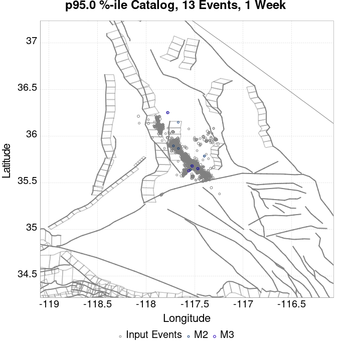 |  |  |  |  |  | |
| 1 Month |  |  |  |  |  |  |  |  |  |  |  | |
| 1 Year |  |  |  |  |  |  |  |  | 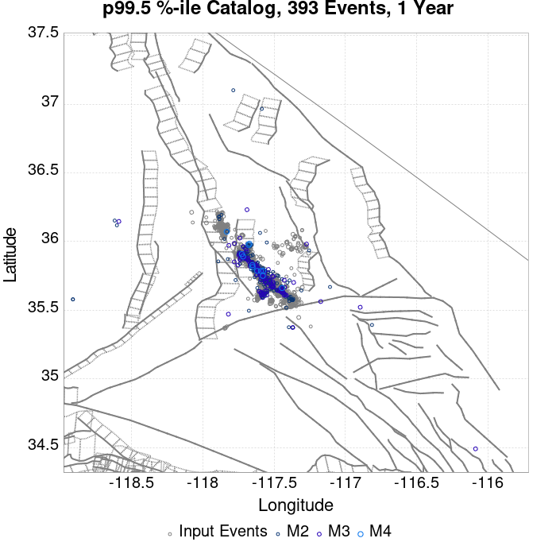 |  |  | |
| 10 Year |  | 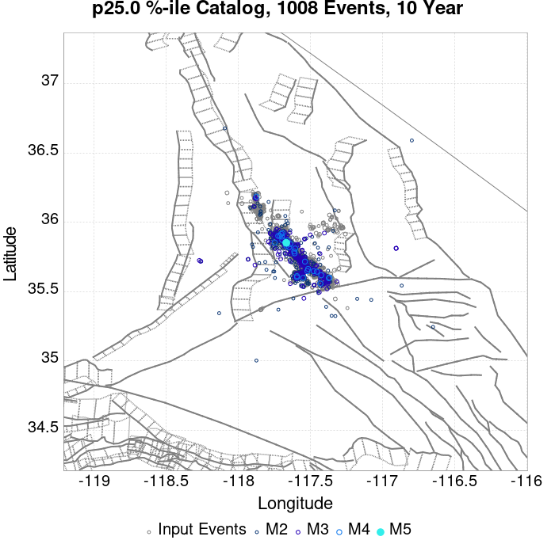 |  |  |  |  |  |  |  | 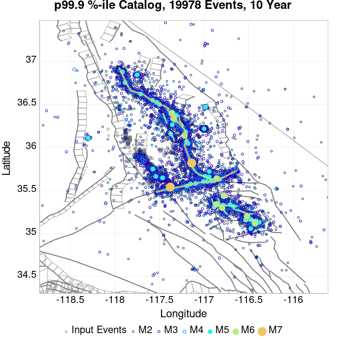 |
These plots compare simulated sequences with data from ComCat. All plots only consider events with hypocenters inside the ComCat region defined in the JSON input file.
Last updated at 2019/12/27 15:33:24 UTC, 52.5 days after the simulation start time.
Total matching ComCat events found: 71
| Incremental MND | Cumulative MND |
|---|---|
 |  |
The following plots compare simulation results with ComCat data above a magnitude threshold. Plots labeled as M≥Mc(t) use the time-dependent magnitude of completeness (Mc) defined in Helmstetter et al. (2006), which is plotted below. In the case of multiple M≥5 ruptures, either as input to the simulation or in the comparison data, the maximum calculated time-dependent Mc is used. This time-dependent Mc function is plotted below.

| M≥Mc(t) | M≥3.5 | M≥4 | M≥5 |
|---|---|---|---|
| 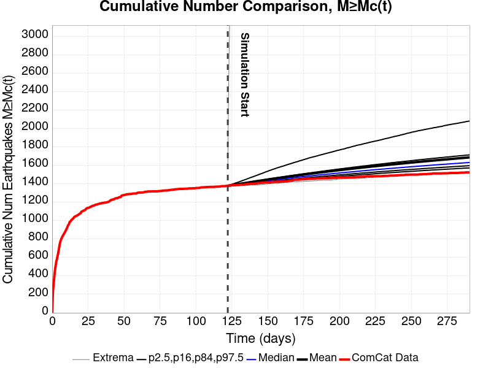 |  | 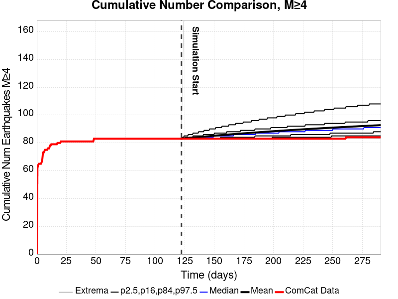 |  |

Note: maps labeled 'Forecast' are for a duration that extends into the future, only forecasted values are plotted (ComCat data omitted)
| 1 Day | 1 Week | 1 Month | Current (52.5 Day) | Forecast: 1 Year | |
|---|---|---|---|---|---|
| M≥Mc(t) |  | 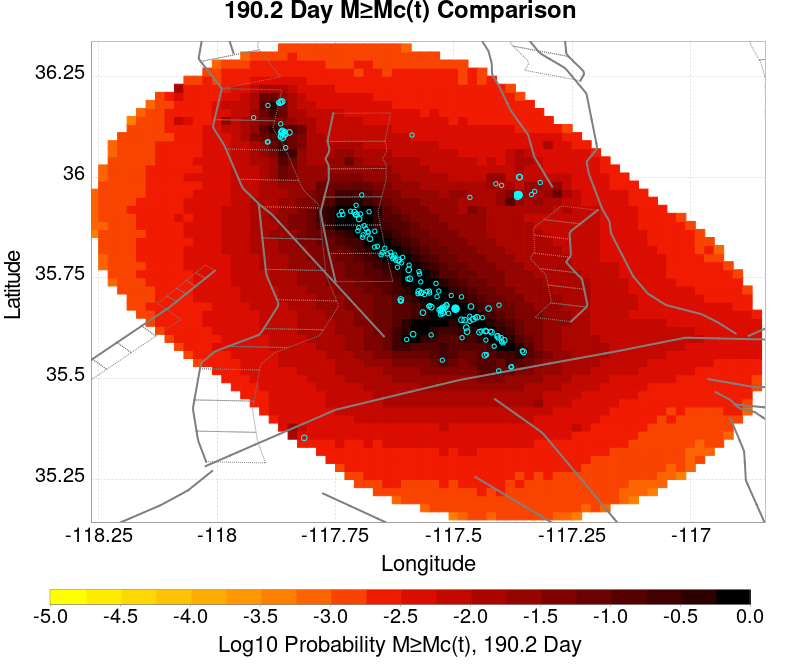 |  | ||
| Prob: 83.39%, Actual: 2 | Prob: 100.00%, Actual: 9 | Prob: 100.00%, Actual: 37 | Prob: 100.00%, Actual: 71 | Prob: 100.00% | |
| M≥3.5 |  |  | |||
| Prob: 17.21%, Actual: 0 | Prob: 72.40%, Actual: 0 | Prob: 99.40%, Actual: 5 | Prob: 99.98%, Actual: 12 | Prob: 100.00% | |
| M≥4 |  | 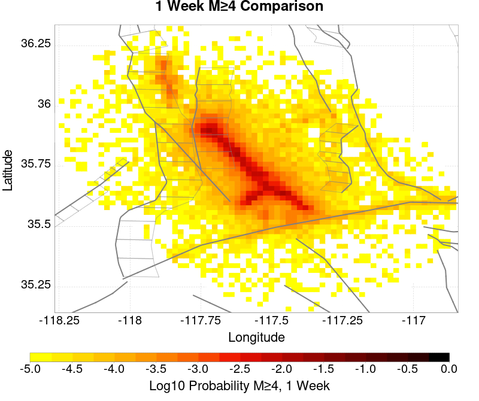 |  | ||
| Prob: 5.99%, Actual: 0 | Prob: 34.50%, Actual: 0 | Prob: 81.27%, Actual: 0 | Prob: 93.46%, Actual: 0 | Prob: 100.00% | |
| M≥5 |  |  |  | ||
| Prob: 0.65%, Actual: 0 | Prob: 4.36%, Actual: 0 | Prob: 16.32%, Actual: 0 | Prob: 25.42%, Actual: 0 | Prob: 68.16% | |
| M≥6 | 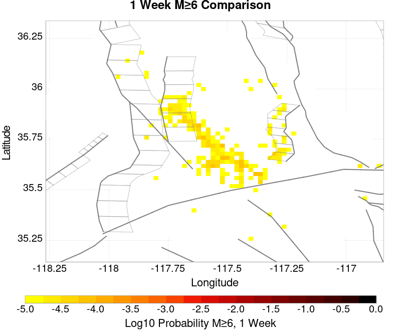 | 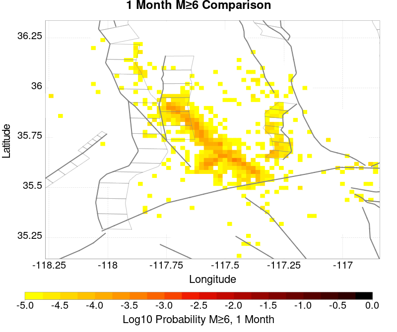 | 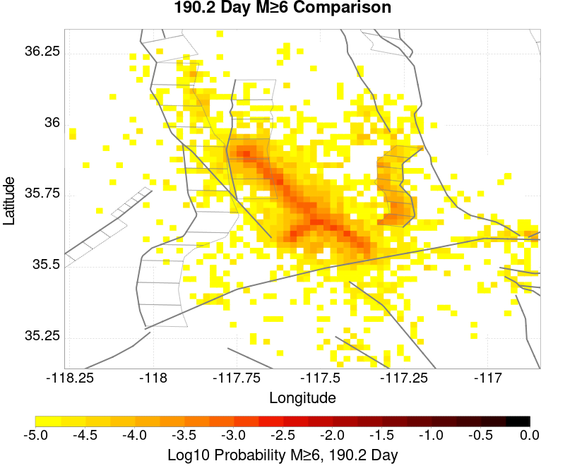 | ||
| Prob: 0.05%, Actual: 0 | Prob: 0.36%, Actual: 0 | Prob: 1.55%, Actual: 0 | Prob: 2.49%, Actual: 0 | Prob: 9.81% | |
| M≥7 | 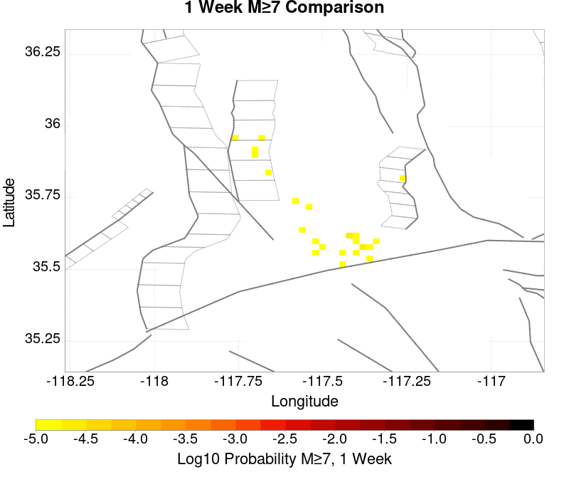 |  | 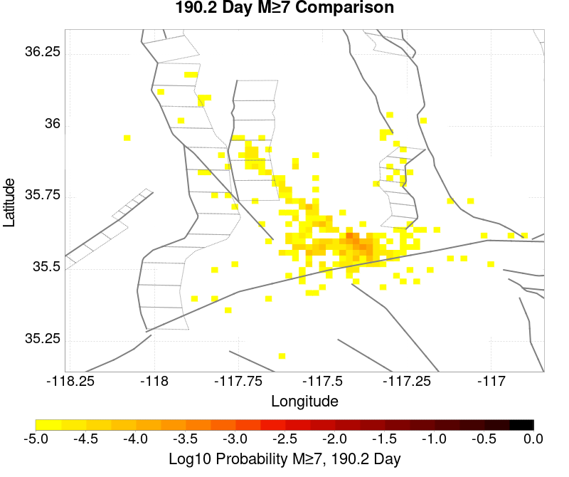 | ||
| Prob: 0.00%, Actual: 0 | Prob: 0.03%, Actual: 0 | Prob: 0.12%, Actual: 0 | Prob: 0.19%, Actual: 0 | Prob: 0.79% | |
| M≥8 |  |  |  | ||
| Prob: 0.00%, Actual: 0 | Prob: 0.00%, Actual: 0 | Prob: 0.00%, Actual: 0 | Prob: 0.00%, Actual: 0 | Prob: 0.00% |
Note: maps labeled 'Forecast' are for a duration that extends into the future, only forecasted values are plotted (ComCat data omitted)
| 1 Day | 1 Week | 1 Month | Current (52.5 Day) | Forecast: 1 Year | |
|---|---|---|---|---|---|
| M≥Mc(t) | 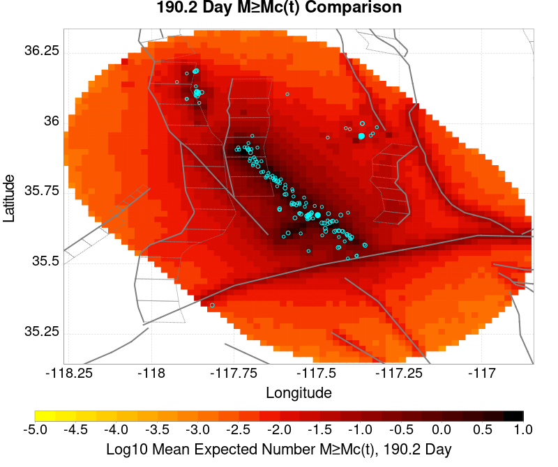 |  | |||
| Mean: 2.250, Actual: 2 | Mean: 17.112, Actual: 9 | Mean: 72.825, Actual: 37 | Mean: 121.313, Actual: 71 | Mean: 508.082 | |
| M≥3.5 |  |  |  |  | |
| Mean: 0.225, Actual: 0 | Mean: 1.706, Actual: 0 | Mean: 7.284, Actual: 5 | Mean: 12.120, Actual: 12 | Mean: 50.804 | |
| M≥4 |  |  | |||
| Mean: 0.072, Actual: 0 | Mean: 0.539, Actual: 0 | Mean: 2.301, Actual: 0 | Mean: 3.825, Actual: 0 | Mean: 16.038 | |
| M≥5 | 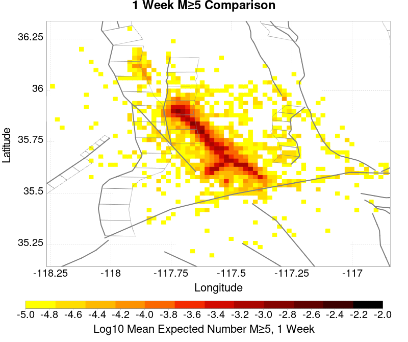 |  | |||
| Mean: 7.17E-3, Actual: 0 | Mean: 0.053, Actual: 0 | Mean: 0.224, Actual: 0 | Mean: 0.372, Actual: 0 | Mean: 1.561 | |
| M≥6 |  |  |  | 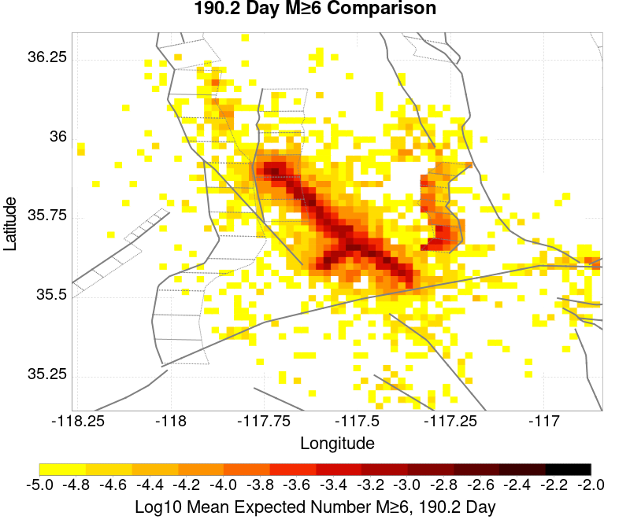 |  |
| Mean: 4.80E-4, Actual: 0 | Mean: 3.87E-3, Actual: 0 | Mean: 0.017, Actual: 0 | Mean: 0.028, Actual: 0 | Mean: 0.119 | |
| M≥7 |  |  |  |  |  |
| Mean: 2.00E-5, Actual: 0 | Mean: 2.50E-4, Actual: 0 | Mean: 1.20E-3, Actual: 0 | Mean: 1.89E-3, Actual: 0 | Mean: 8.02E-3 | |
| M≥8 |  |  | |||
| Mean: 0.000, Actual: 0 | Mean: 0.000, Actual: 0 | Mean: 1.00E-5, Actual: 0 | Mean: 2.00E-5, Actual: 0 | Mean: 3.00E-5 |
| M≥Mc(t) | M≥3.5 | M≥4 | M≥5 | M≥6 | M≥7 | M≥8 |
|---|---|---|---|---|---|---|
 | 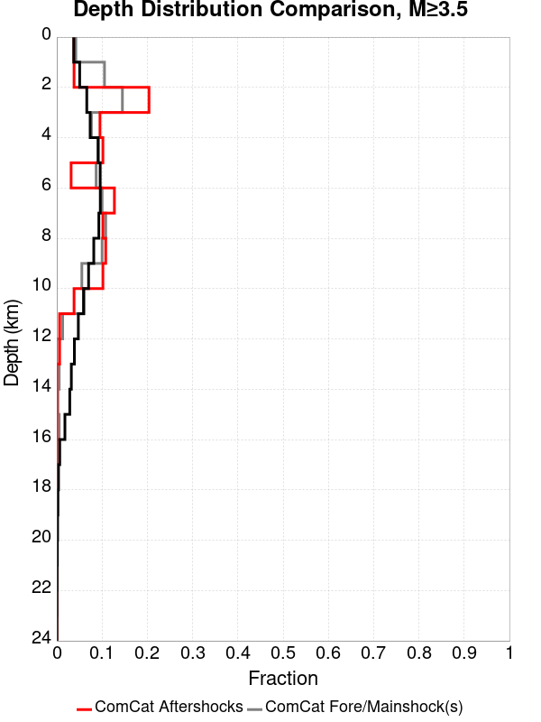 | 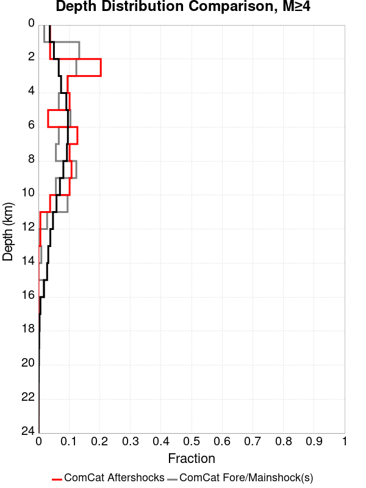 | 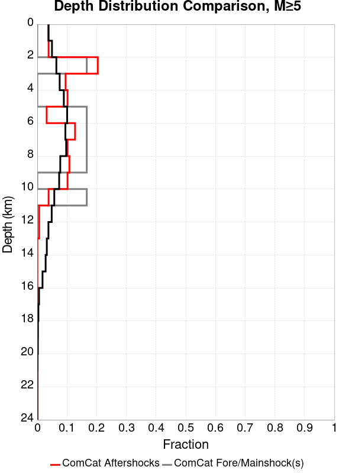 | 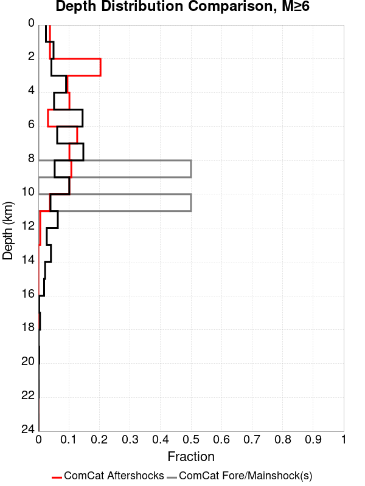 | 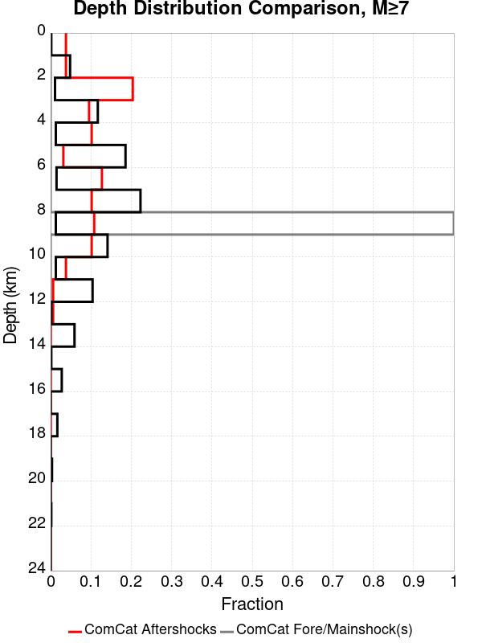 |  |
| Min Mag | 1 yr Triggered Ruptures (no spontaneous) | 10 yr Triggered Ruptures (no spontaneous) | 10 yr Triggered Ruptures (primary aftershocks only) |
|---|---|---|---|
| All Supra. Seis. |  |  | 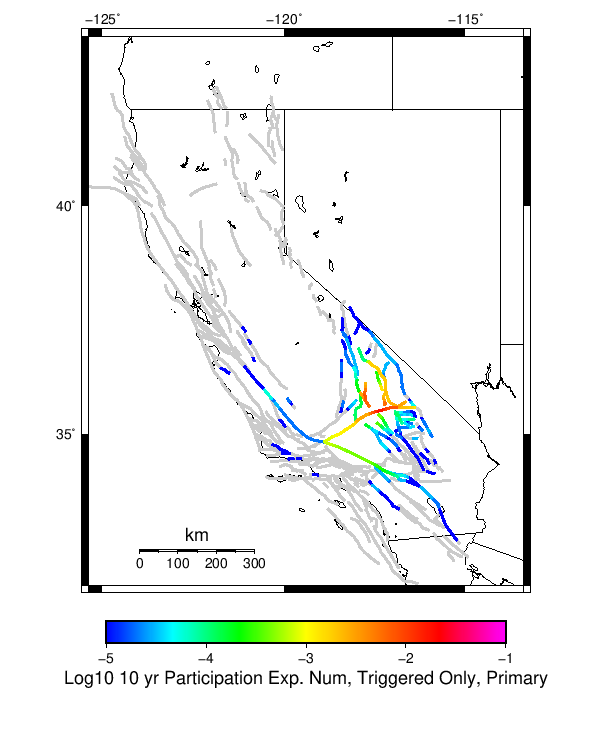 |
| M≥6.5 |  |  |  |
| M≥7 |  |  |  |
| M≥7.5 |  |  |  |
| M≥8 |  |  |  |
First 10 of 153 with matching ruptures shown
| Parent Name | Triggered 10 Year Mean Count | Triggered 1 Day Prob | Triggered 1 Week Prob | Triggered 1 Month Prob | Triggered 1 Year Prob | Triggered 10 Year Prob | Triggered 10 Year Primary Mean Count |
|---|---|---|---|---|---|---|---|
| Garlock (Central) | 0.03964 | 1.2E-4 | 5.2E-4 | 0.00232 | 0.01535 | 0.03853 | 0.02225 |
| Tank Canyon | 0.03088 | 2.0E-5 | 2.9E-4 | 0.00137 | 0.00922 | 0.02636 | 0.00819 |
| Little Lake | 0.01756 | 4.0E-5 | 2.9E-4 | 0.00108 | 0.00706 | 0.01725 | 0.01015 |
| Airport Lake | 0.01386 | 1.0E-5 | 1.8E-4 | 7.8E-4 | 0.00597 | 0.01383 | 0.00899 |
| Owl Lake | 0.01252 | 1.0E-5 | 1.0E-4 | 5.0E-4 | 0.00402 | 0.01118 | 0.00332 |
| Panamint Valley | 0.0089 | 0.0 | 1.0E-4 | 5.1E-4 | 0.00324 | 0.0087 | 0.00312 |
| Garlock (East) | 0.00841 | 1.0E-5 | 8.0E-5 | 4.1E-4 | 0.00281 | 0.00759 | 0.0023 |
| Ash Hill | 0.00524 | 0.0 | 5.0E-5 | 2.6E-4 | 0.00182 | 0.00485 | 0.00153 |
| Hunter Mountain-Saline Valley | 0.00388 | 0.0 | 3.0E-5 | 2.2E-4 | 0.00152 | 0.00378 | 0.00184 |
| Blackwater | 0.00326 | 0.0 | 3.0E-5 | 1.0E-4 | 0.00113 | 0.00314 | 6.4E-4 |
First 10 of 127 with matching ruptures shown
| Parent Name | Triggered 10 Year Mean Count | Triggered 1 Day Prob | Triggered 1 Week Prob | Triggered 1 Month Prob | Triggered 1 Year Prob | Triggered 10 Year Prob | Triggered 10 Year Primary Mean Count |
|---|---|---|---|---|---|---|---|
| Garlock (Central) | 0.01669 | 2.0E-5 | 2.4E-4 | 0.00102 | 0.00652 | 0.01645 | 0.00898 |
| Airport Lake | 0.01052 | 1.0E-5 | 1.3E-4 | 6.3E-4 | 0.00457 | 0.01051 | 0.00686 |
| Little Lake | 0.01027 | 2.0E-5 | 2.0E-4 | 6.8E-4 | 0.00419 | 0.01014 | 0.00618 |
| Panamint Valley | 0.00818 | 0.0 | 1.0E-4 | 4.6E-4 | 0.00297 | 0.00803 | 0.00303 |
| Owl Lake | 0.00736 | 0.0 | 6.0E-5 | 3.5E-4 | 0.00261 | 0.00735 | 0.00305 |
| Garlock (East) | 0.0057 | 1.0E-5 | 7.0E-5 | 3.4E-4 | 0.00217 | 0.00542 | 0.00221 |
| Hunter Mountain-Saline Valley | 0.00378 | 0.0 | 3.0E-5 | 2.2E-4 | 0.00146 | 0.0037 | 0.00182 |
| Tank Canyon | 0.00337 | 0.0 | 2.0E-5 | 1.2E-4 | 9.6E-4 | 0.00335 | 8.6E-4 |
| Garlock (West) | 0.00274 | 0.0 | 2.0E-5 | 1.4E-4 | 0.00104 | 0.00274 | 0.00156 |
| So Sierra Nevada | 0.0016 | 0.0 | 0.0 | 9.0E-5 | 6.2E-4 | 0.00159 | 3.4E-4 |
First 10 of 96 with matching ruptures shown
| Parent Name | Triggered 10 Year Mean Count | Triggered 1 Day Prob | Triggered 1 Week Prob | Triggered 1 Month Prob | Triggered 1 Year Prob | Triggered 10 Year Prob | Triggered 10 Year Primary Mean Count |
|---|---|---|---|---|---|---|---|
| Garlock (Central) | 0.01472 | 1.0E-5 | 1.7E-4 | 8.8E-4 | 0.00575 | 0.01458 | 0.00798 |
| Panamint Valley | 0.00551 | 0.0 | 7.0E-5 | 3.4E-4 | 0.00212 | 0.00548 | 0.00266 |
| Owl Lake | 0.00535 | 0.0 | 4.0E-5 | 2.8E-4 | 0.00202 | 0.00535 | 0.00295 |
| Garlock (East) | 0.00418 | 1.0E-5 | 6.0E-5 | 2.7E-4 | 0.00177 | 0.00415 | 0.00212 |
| Hunter Mountain-Saline Valley | 0.00361 | 0.0 | 3.0E-5 | 2.1E-4 | 0.00143 | 0.00361 | 0.00176 |
| Garlock (West) | 0.00272 | 0.0 | 2.0E-5 | 1.4E-4 | 0.00104 | 0.00272 | 0.00156 |
| Little Lake | 0.0023 | 0.0 | 7.0E-5 | 1.8E-4 | 9.3E-4 | 0.0023 | 0.00147 |
| Airport Lake | 0.00207 | 0.0 | 7.0E-5 | 1.7E-4 | 8.5E-4 | 0.00207 | 0.0014 |
| San Andreas (Mojave N) | 0.00123 | 0.0 | 1.0E-5 | 7.0E-5 | 4.0E-4 | 0.0012 | 7.0E-4 |
| San Andreas (Mojave S) | 9.3E-4 | 0.0 | 1.0E-5 | 5.0E-5 | 2.7E-4 | 9.1E-4 | 5.0E-4 |
First 10 of 56 with matching ruptures shown
| Parent Name | Triggered 10 Year Mean Count | Triggered 1 Day Prob | Triggered 1 Week Prob | Triggered 1 Month Prob | Triggered 1 Year Prob | Triggered 10 Year Prob | Triggered 10 Year Primary Mean Count |
|---|---|---|---|---|---|---|---|
| Garlock (Central) | 0.00577 | 0.0 | 5.0E-5 | 3.5E-4 | 0.00229 | 0.00577 | 0.00317 |
| Panamint Valley | 0.00358 | 0.0 | 3.0E-5 | 2.1E-4 | 0.00142 | 0.00358 | 0.00178 |
| Hunter Mountain-Saline Valley | 0.00354 | 0.0 | 3.0E-5 | 2.1E-4 | 0.00141 | 0.00354 | 0.00176 |
| Garlock (West) | 0.00249 | 0.0 | 2.0E-5 | 1.4E-4 | 9.6E-4 | 0.00249 | 0.00147 |
| Garlock (East) | 0.00162 | 0.0 | 2.0E-5 | 1.1E-4 | 6.6E-4 | 0.00162 | 9.5E-4 |
| San Andreas (Mojave N) | 0.00122 | 0.0 | 1.0E-5 | 7.0E-5 | 4.0E-4 | 0.0012 | 7.0E-4 |
| San Andreas (Mojave S) | 8.8E-4 | 0.0 | 1.0E-5 | 5.0E-5 | 2.6E-4 | 8.7E-4 | 5.0E-4 |
| San Andreas (San Bernardino N) | 5.2E-4 | 0.0 | 1.0E-5 | 3.0E-5 | 1.7E-4 | 5.2E-4 | 3.0E-4 |
| Owl Lake | 5.0E-4 | 0.0 | 0.0 | 3.0E-5 | 2.1E-4 | 5.0E-4 | 3.1E-4 |
| San Andreas (San Bernardino S) | 2.8E-4 | 0.0 | 0.0 | 1.0E-5 | 1.0E-4 | 2.8E-4 | 1.6E-4 |
First 10 of 26 with matching ruptures shown
| Parent Name | Triggered 10 Year Mean Count | Triggered 1 Day Prob | Triggered 1 Week Prob | Triggered 1 Month Prob | Triggered 1 Year Prob | Triggered 10 Year Prob | Triggered 10 Year Primary Mean Count |
|---|---|---|---|---|---|---|---|
| San Andreas (Mojave N) | 1.3E-4 | 0.0 | 0.0 | 1.0E-5 | 5.0E-5 | 1.3E-4 | 5.0E-5 |
| San Andreas (Mojave S) | 1.3E-4 | 0.0 | 0.0 | 1.0E-5 | 5.0E-5 | 1.3E-4 | 5.0E-5 |
| San Andreas (San Bernardino N) | 1.3E-4 | 0.0 | 0.0 | 1.0E-5 | 5.0E-5 | 1.3E-4 | 5.0E-5 |
| Garlock (Central) | 1.0E-4 | 0.0 | 0.0 | 1.0E-5 | 3.0E-5 | 1.0E-4 | 5.0E-5 |
| Garlock (East) | 1.0E-4 | 0.0 | 0.0 | 1.0E-5 | 3.0E-5 | 1.0E-4 | 5.0E-5 |
| Garlock (West) | 1.0E-4 | 0.0 | 0.0 | 1.0E-5 | 3.0E-5 | 1.0E-4 | 5.0E-5 |
| San Andreas (San Bernardino S) | 8.0E-5 | 0.0 | 0.0 | 1.0E-5 | 5.0E-5 | 8.0E-5 | 2.0E-5 |
| San Andreas (Coachella) rev | 6.0E-5 | 0.0 | 0.0 | 0.0 | 3.0E-5 | 6.0E-5 | 1.0E-5 |
| San Andreas (San Gorgonio Pass-Garnet HIll) | 6.0E-5 | 0.0 | 0.0 | 0.0 | 3.0E-5 | 6.0E-5 | 0.0 |
| San Andreas (North Branch Mill Creek) | 4.0E-5 | 0.0 | 0.0 | 0.0 | 0.0 | 4.0E-5 | 3.0E-5 |
The first 5 sections (sorted by trigger rate) are plotted below. All fault MPDs are available here
| 1 Week | 1 Month | 1 Year | 10 Year |
|---|---|---|---|
 |  |  |  |
 |  |  |  |
 |  |  |  |
| 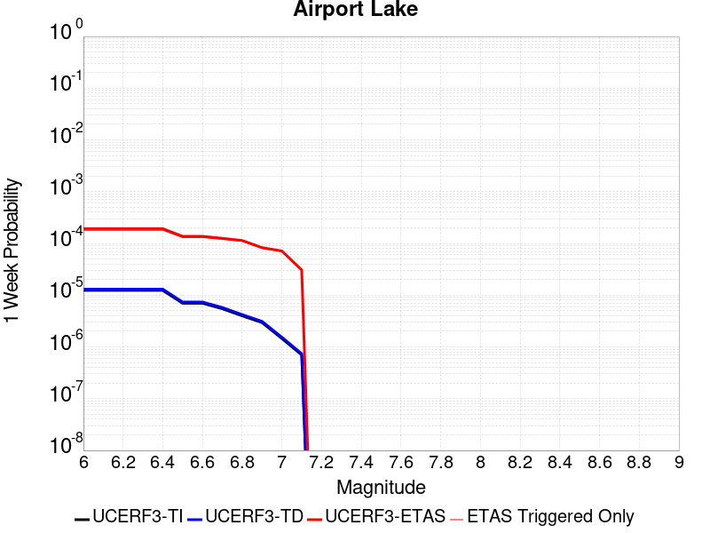 |  |  |  |
 |  |  |  |
| Min Mag | Triggered Ruptures (no spontaneous) | Triggered Ruptures (primary aftershocks only) |
|---|---|---|
| M≥2.5 |  |  |
| M≥5 |  |  |
| M≥6 |  |  |
| M≥7 |  |
{
"numSimulations": 100000,
"duration": 10.0,
"startTimeMillis": 1572923142971,
"includeSpontaneous": false,
"randomSeed": 1572923149135,
"binaryOutput": true,
"binaryOutputFilters": [
{
"prefix": "results_complete",
"descendantsOnly": false
},
{
"prefix": "results_m5_preserve_chain",
"minMag": 5.0,
"preserveChainBelowMag": true,
"descendantsOnly": false
}
],
"forceRecalc": false,
"simulationName": "ComCat M7.1 (ci38457511), 122 Days After, ShakeMap Surfaces",
"numRetries": 3,
"outputDir": "/home/scec-02/kmilner/ucerf3/etas_sim/2019_11_04-ComCatM7p1_ci38457511_122DaysAfter_ShakeMapSurfaces",
"treatTriggerCatalogAsSpontaneous": false,
"triggerRuptures": [
"omitted due to length, see original input file"
],
"cacheDir": "/home/scec-02/kmilner/ucerf3/ucerf3-etas-launcher/inputs/cache_fm3p1_ba",
"fssFile": "/home/scec-02/kmilner/ucerf3/ucerf3-etas-launcher/inputs/2013_05_10-ucerf3p3-production-10runs_COMPOUND_SOL_FM3_1_SpatSeisU3_MEAN_BRANCH_AVG_SOL.zip",
"probModel": "FULL_TD",
"applySubSeisForSupraNucl": true,
"totRateScaleFactor": 1.14,
"gridSeisCorr": true,
"timeIndependentERF": false,
"griddedOnly": false,
"imposeGR": false,
"includeIndirectTriggering": true,
"gridSeisDiscr": 0.1,
"catalogCompletenessModel": "RELAXED",
"configCommand": "u3etas_comcat_event_config_builder.sh --event-id ci38457511 --num-simulations 100000 --days-before 7 --end-now --mag-complete 3.5 --finite-surf-shakemap --finite-surf-shakemap-min-mag 5 --hpc-site USC_HPC --nodes 36 --hours 24 --queue scec",
"configTime": 1572923149135,
"comcatMetadata": {
"region": {
"border": [
{
"latitude": 35.15123745324938,
"longitude": -117.46198765392752
},
{
"latitude": 35.170513097218205,
"longitude": -117.55046477274733
},
{
"latitude": 35.201997575622634,
"longitude": -117.63356287896195
},
{
"latitude": 35.24474776584818,
"longitude": -117.70878534540662
},
{
"latitude": 35.2893890362986,
"longitude": -117.76387551603122
},
{
"latitude": 35.288830898189985,
"longitude": -117.76465036296011
},
{
"latitude": 35.62116745212862,
"longitude": -118.13026990137416
},
{
"latitude": 35.621789874646055,
"longitude": -118.12940866580139
},
{
"latitude": 35.621789874646055,
"longitude": -118.12940866580136
},
{
"latitude": 35.63100857737423,
"longitude": -118.14083341711117
},
{
"latitude": 35.69213881200874,
"longitude": -118.19401186444136
},
{
"latitude": 35.759827796433385,
"longitude": -118.23338865654299
},
{
"latitude": 35.8320329014668,
"longitude": -118.25773927868946
},
{
"latitude": 35.906569563076914,
"longitude": -118.26628547708222
},
{
"latitude": 35.9811764992231,
"longitude": -118.25872343341653
},
{
"latitude": 36.05358395358725,
"longitude": -118.23523828089384
},
{
"latitude": 36.12158296055357,
"longitude": -118.19650389473806
},
{
"latitude": 36.18309350302806,
"longitude": -118.14366730262441
},
{
"latitude": 36.23622937613509,
"longitude": -118.07831757407638
},
{
"latitude": 36.279357589115186,
"longitude": -118.00243964650828
},
{
"latitude": 36.31115024550475,
"longitude": -117.91835419890715
},
{
"latitude": 36.33062704347584,
"longitude": -117.82864534929934
},
{
"latitude": 36.337186832826475,
"longitude": -117.7360785775
},
{
"latitude": 36.33062704347584,
"longitude": -117.64351180570065
},
{
"latitude": 36.31115024550475,
"longitude": -117.55380295609284
},
{
"latitude": 36.279357589115186,
"longitude": -117.46971750849171
},
{
"latitude": 36.23622937613509,
"longitude": -117.39383958092363
},
{
"latitude": 36.19237301765921,
"longitude": -117.33990236386252
},
{
"latitude": 36.19237301765921,
"longitude": -117.3399023638625
},
{
"latitude": 36.19300476664728,
"longitude": -117.33902822340912
},
{
"latitude": 35.858277657147454,
"longitude": -116.97410396317103
},
{
"latitude": 35.85771127553969,
"longitude": -116.97489025431044
},
{
"latitude": 35.849566414597014,
"longitude": -116.96491461360324
},
{
"latitude": 35.78805819220281,
"longitude": -116.9122967694479
},
{
"latitude": 35.72006106557635,
"longitude": -116.87372034968973
},
{
"latitude": 35.64765482528862,
"longitude": -116.85032807444419
},
{
"latitude": 35.57304829206068,
"longitude": -116.8427916482061
},
{
"latitude": 35.49851117585832,
"longitude": -116.8512961557198
},
{
"latitude": 35.42630481575459,
"longitude": -116.87553976530553
},
{
"latitude": 35.35861392859174,
"longitude": -116.91474809853695
},
{
"latitude": 35.29748137319737,
"longitude": -116.96770221389164
},
{
"latitude": 35.24474776584818,
"longitude": -117.03277884359336
},
{
"latitude": 35.201997575622634,
"longitude": -117.10800131003803
},
{
"latitude": 35.170513097218205,
"longitude": -117.19109941625265
},
{
"latitude": 35.15123745324938,
"longitude": -117.27957653507247
},
{
"latitude": 35.14474752487352,
"longitude": -117.3707820945
}
]
},
"eventID": "ci38457511",
"minDepth": -10.0,
"maxDepth": 24.0,
"minMag": 2.5,
"startTime": 1561778393040,
"endTime": 1572923141971,
"magComplete": 3.5
}
}